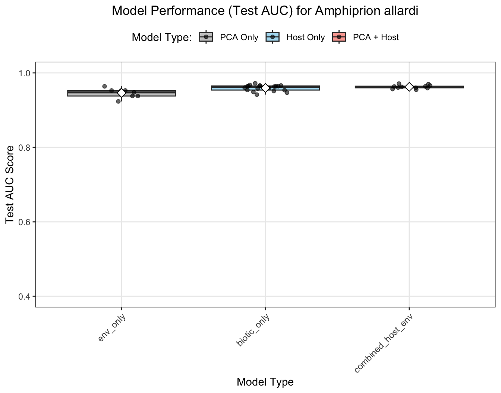
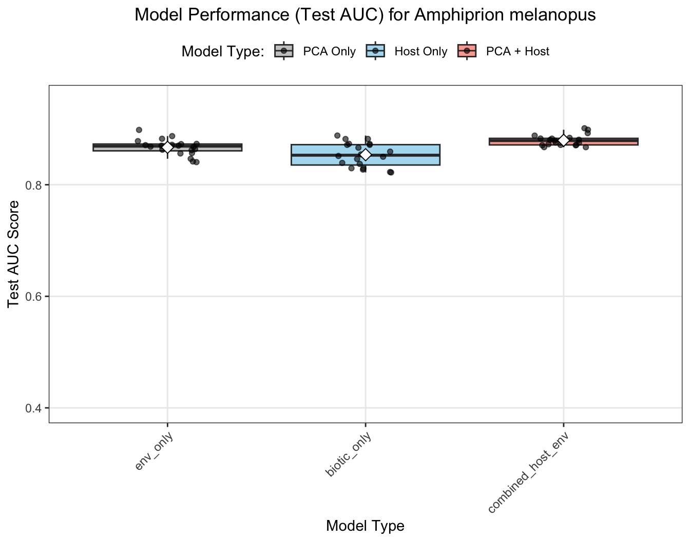
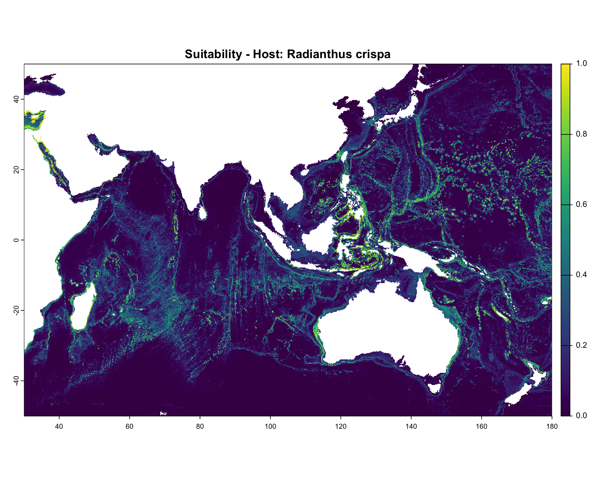

Drivers of Host Sea Anemone and Anemonefish Richness
This section replicates the initial data loading and processing steps from the desert ant paper’s results section, adapted for the anemonefish-anemone mutualism. We load the current predicted suitability rasters for host sea anemones and anemonefish (environmental-only models), calculate community richness, and crop them to the Indo-Pacific study area.
# Using pacman for streamlined package managementif (!require("pacman")) install.packages("pacman")pacman::p_load(here, dplyr, terra, sf, stringr, ggplot2, readr, tools)# Load project configuration# Ensure your working directory is the root of your sdm_anemonefish projectif (file.exists("scripts/config.R")) {source("scripts/config.R")} elseif (file.exists(here::here("scripts/config.R"))) {source(here::here("scripts/config.R"))} else {stop("FATAL: Configuration file 'scripts/config.R' not found. Please set your working directory to the project root.")}
Configuration loaded and bundled into 'config' list.
Base directory: /Users/chrisrauch/anemonefish_post_analysis
Intermediate SDM Output Dir: /Users/chrisrauch/anemonefish_post_analysis/data/sdm_output_intermediate
Intermediate Models Dir: /Users/chrisrauch/anemonefish_post_analysis/data/sdm_output_intermediate/models
Intermediate Results Dir: /Users/chrisrauch/anemonefish_post_analysis/data/sdm_output_intermediate/results
Target Prediction Base: /Users/chrisrauch/anemonefish_post_analysis/data/output/predictions
Target Results Base: /Users/chrisrauch/anemonefish_post_analysis/predictions
Logging to file: /Users/chrisrauch/anemonefish_post_analysis/data/sdm_output_intermediate/logs_and_analysis/sdm_run_20250529_180212.log (Level: INFO Append: TRUE )
Logging to console: TRUE (Level: INFO )
Parallel execution: TRUE with 7 cores.
Using predictors: PCA
if (!exists("config")) stop("FATAL: 'config' list not found after sourcing config.R")# Helper function for constructing prediction filenames (already in your sdm_modeling_helpers.R)# Make sure this helper is sourced or defined if not running the full pipeline before thissource(file.path(config$helpers_dir, "sdm_modeling_helpers.R")) # If neededscenario_label_converter <-c("current"="Current","ssp119_2050"="SSP1-1.9 (2050)","ssp119_2100"="SSP1-1.9 (2100)","ssp245_2050"="SSP2-4.5 (2050)", # Example, add if you have it"ssp245_2100"="SSP2-4.5 (2100)", # Example, add if you have it"ssp370_2050"="SSP3-7.0 (2050)", # Example, add if you have it"ssp370_2100"="SSP3-7.0 (2100)", # Example, add if you have it"ssp585_2050"="SSP5-8.5 (2050)","ssp585_2100"="SSP5-8.5 (2100)")
# --- Define Parameters ---current_scenario_name <-"current"# Determine the suffix based on config (assuming this is for env-only models)predictor_suffix <-ifelse(config$use_pca_predictors, "_pca", "_vif")# --- 1. Load Host Sea Anemone Data ---cat("--- Loading Host Sea Anemone Predictions (Current Scenario) ---\n")
if (!file.exists(config$anemone_species_list_file)) {stop("Anemone species list CSV not found: ", config$anemone_species_list_file)}anemone_species_df <- readr::read_csv(config$anemone_species_list_file, show_col_types =FALSE)host_raster_files <-c()host_short_names <-c()for (i in1:nrow(anemone_species_df)) { sp_name_sanitized <-gsub(" ", "_", anemone_species_df$scientificName[i])# Use the construct_prediction_filename helper if it's available and loaded# Otherwise, construct manually (ensure it matches your file naming) pred_file_path <-construct_prediction_filename(species_name_sanitized = sp_name_sanitized,scenario_name = current_scenario_name,predictor_type_suffix = predictor_suffix, # Suffix for anemone env-only modelsconfig = config )if (file.exists(pred_file_path)) { host_raster_files <-c(host_raster_files, pred_file_path) host_short_names <-c(host_short_names, sp_name_sanitized) # Or create 2-letter codes } else {cat("Warning: Host prediction file not found for", sp_name_sanitized, "at", pred_file_path, "\n") }}
Warning: Host prediction file not found for Radianthus_aurora at /Users/chrisrauch/anemonefish_post_analysis/data/output/predictions/mean_pred_Radianthus_aurora_pca.tif
host_pred_stack <-NULLif (length(host_raster_files) >0) { host_pred_stack <- terra::rast(host_raster_files)names(host_pred_stack) <- host_short_namescat("Loaded", terra::nlyr(host_pred_stack), "host anemone prediction rasters.\n") host_richness_sum <-sum(host_pred_stack, na.rm =TRUE)names(host_richness_sum) <-"HostAnemoneRichness"cat("Calculated host anemone summed richness.\n")# Optional: Plot individual host rasters and summed richness before cropping# plot(host_pred_stack, main = "Individual Host Anemone Suitability (Current)")# plot(host_richness_sum, main = "Summed Host Anemone Richness (Current - Uncropped)")} else {cat("Error: No host anemone prediction rasters found. Cannot proceed with host richness.\n") host_richness_sum <-NULL# Ensure it's NULL if no files found}
if (!file.exists(config$anemonefish_species_list_file)) {stop("Anemonefish species list CSV not found: ", config$anemonefish_species_list_file)}anemonefish_species_df <- readr::read_csv(config$anemonefish_species_list_file, show_col_types =FALSE)fish_raster_files <-c()fish_short_names <-c()for (i in1:nrow(anemonefish_species_df)) { sp_name_sanitized <-gsub(" ", "_", anemonefish_species_df$scientificName[i])# Suffix for anemonefish env-only models (from 06b) pred_file_path <-construct_prediction_filename(species_name_sanitized = sp_name_sanitized,scenario_name = current_scenario_name,predictor_type_suffix = predictor_suffix, # Same suffix if using same method (PCA/VIF)config = config )if (file.exists(pred_file_path)) { fish_raster_files <-c(fish_raster_files, pred_file_path) fish_short_names <-c(fish_short_names, sp_name_sanitized) } else {cat("Warning: Anemonefish (env-only) prediction file not found for", sp_name_sanitized, "at", pred_file_path, "\n") }}
Warning: Anemonefish (env-only) prediction file not found for Amphiprion_akindynos at /Users/chrisrauch/anemonefish_post_analysis/data/output/predictions/mean_pred_Amphiprion_akindynos_pca.tif
Warning: Anemonefish (env-only) prediction file not found for Amphiprion_allardi at /Users/chrisrauch/anemonefish_post_analysis/data/output/predictions/mean_pred_Amphiprion_allardi_pca.tif
Warning: Anemonefish (env-only) prediction file not found for Amphiprion_bicinctus at /Users/chrisrauch/anemonefish_post_analysis/data/output/predictions/mean_pred_Amphiprion_bicinctus_pca.tif
Warning: Anemonefish (env-only) prediction file not found for Amphiprion_chrysopterus at /Users/chrisrauch/anemonefish_post_analysis/data/output/predictions/mean_pred_Amphiprion_chrysopterus_pca.tif
Warning: Anemonefish (env-only) prediction file not found for Amphiprion_melanopus at /Users/chrisrauch/anemonefish_post_analysis/data/output/predictions/mean_pred_Amphiprion_melanopus_pca.tif
Warning: Anemonefish (env-only) prediction file not found for Amphiprion_percula at /Users/chrisrauch/anemonefish_post_analysis/data/output/predictions/mean_pred_Amphiprion_percula_pca.tif
Warning: Anemonefish (env-only) prediction file not found for Premnas_biaculeatus at /Users/chrisrauch/anemonefish_post_analysis/data/output/predictions/mean_pred_Premnas_biaculeatus_pca.tif
fish_pred_stack <-NULLif (length(fish_raster_files) >0) { fish_pred_stack <- terra::rast(fish_raster_files)names(fish_pred_stack) <- fish_short_namescat("Loaded", terra::nlyr(fish_pred_stack), "anemonefish (env-only) prediction rasters.\n") fish_richness_sum <-sum(fish_pred_stack, na.rm =TRUE)names(fish_richness_sum) <-"AnemonefishRichness_EnvOnly"cat("Calculated anemonefish (env-only) summed richness.\n")# Optional: Plot individual fish rasters and summed richness before cropping# plot(fish_pred_stack, main = "Individual Anemonefish Suitability (Current, Env-Only)")# plot(fish_richness_sum, main = "Summed Anemonefish Richness (Current, Env-Only - Uncropped)")} else {cat("Error: No anemonefish (env-only) prediction rasters found. Cannot proceed with fish richness.\n") fish_richness_sum <-NULL# Ensure it's NULL}
if (!is.null(host_richness_sum_cropped)) {plot(host_richness_sum_cropped, main ="Summed Host Anemone Richness (Current - Cropped)")}
if (!is.null(fish_richness_sum_cropped)) {plot(fish_richness_sum_cropped, main ="Summed Anemonefish Richness (Current, Env-Only - Cropped)")}
# Optional: Plot cropped individual stacks if needed for visual check# if (!is.null(host_pred_stack_cropped)) {# plot(host_pred_stack_cropped, main = "Individual Host Anemone Suitability (Cropped)")# }# if (!is.null(fish_pred_stack_cropped)) {# plot(fish_pred_stack_cropped, main = "Individual Anemonefish (Env-Only) Suitability (Cropped)")# }cat("\n--- First section of results processing finished. ---\n")
--- First section of results processing finished. ---
# The objects host_pred_stack_cropped, host_richness_sum_cropped, # fish_pred_stack_cropped, and fish_richness_sum_cropped are now available.
Evaluate models
This section loads the cross-validation (CV) results from the various SDM runs for host sea anemones and different types of anemonefish models (environmental-only, biotic-only, and combined environmental + biotic), focusing on AUC.
library(purrr) # For map_dflibrary(dplyr) # For data manipulationlibrary(readr) # For read_csv# --- 1. Load Host Sea Anemone CV Results ("Plants" equivalent) ---# Determine suffix based on config (assuming this matches what was used for 06a)host_predictor_suffix <-ifelse(config$use_pca_predictors, "_pca", "_vif")host_cv_results_dir <-file.path(config$target_results_base, paste0("anemone", host_predictor_suffix))cat("Loading Host Sea Anemone CV results from:", host_cv_results_dir, "\n")
# The data frames:# - host_cv_data (and host_model_evals)# - fish_env_cv_data# - anemonefish_biotic_cv_data# - anemonefish_combined_cv_data# are now available for the next steps.
Collect and Prepare Anemonefish Model Evaluation Data
This section gathers the CV results from the different anemonefish model types (environmental-only, biotic-only, and combined host+environment), cleans the species names, and standardizes a ‘model_type’ column for comparison.
library(tidyr) # For separatelibrary(dplyr)library(stringr) # For string manipulation# --- 1. Prepare Anemonefish Environmental-Only Data ---if (!is.null(fish_env_cv_data) &&nrow(fish_env_cv_data) >0) { fish_env_processed <- fish_env_cv_data %>%mutate(# # Extract species name: Remove "CV_Results_" prefix and ".csv" suffix# species = str_remove(filename, "^CV_Results_"),# species = str_remove(species, "\\.csv$"),# # Add model typespecies = SpeciesName,model_type ="env_only" ) %>% dplyr::select(species, model_type, AUC_test_CV, filename_full) # Keep relevant columns, filename_full for debuggingcat("Processed anemonefish environmental-only CV data.\n")} else {cat("Warning: fish_env_cv_data is empty or NULL. Cannot process environmental-only models.\n") fish_env_processed <-NULL}
Processed anemonefish environmental-only CV data.
# --- 2. Prepare Anemonefish Biotic-Only Data ---if (!is.null(anemonefish_biotic_cv_data) &&nrow(anemonefish_biotic_cv_data) >0) { fish_biotic_processed <- anemonefish_biotic_cv_data %>%mutate(# Extract species name: Remove "CV_Results_" prefix and the known suffix "_biotic_only.csv" (or _biotic_pc4 if that was kept)# Assuming filenames are like: CV_Results_Amphiprion_clarkii_biotic_only.csv or CV_Results_Amphiprion_clarkii_biotic_pc4.csv# Adjust the str_remove pattern if your biotic_only filenames have a different consistent suffix# species = str_remove(filename, "^CV_Results_"),# species = str_remove(species, paste0(config$model_output_subdir_map[["_biotic_only"]] %||% "_biotic_only", "\\.csv$")), # Use suffix from map or default# species = str_remove(species, paste0(config$model_output_subdir_map[["_biotic_pc4"]] %||% "_biotic_pc4", "\\.csv$")), # If _biotic_pc4 was usedspecies = SpeciesName,model_type ="biotic_only" ) %>% dplyr::select(species, model_type, AUC_test_CV, filename_full)cat("Processed anemonefish biotic-only CV data.\n")} else {cat("Warning: anemonefish_biotic_cv_data is empty or NULL. Cannot process biotic-only models.\n") fish_biotic_processed <-NULL}
Processed anemonefish biotic-only CV data.
# --- 3. Prepare Anemonefish Combined (Host + Env) Data ---if (!is.null(anemonefish_combined_cv_data) &&nrow(anemonefish_combined_cv_data) >0) { fish_combined_processed <- anemonefish_combined_cv_data %>%mutate(# # Extract species name: Remove "CV_Results_" and the known suffix "_combined_pca.csv"# species = str_remove(filename, "^CV_Results_"),# species = str_remove(species, paste0(config$model_output_subdir_map[["_combined_pca"]] %||% "_combined_pca", "\\.csv$")), # Use suffix from map or defaultspecies = SpeciesName,model_type ="combined_host_env" ) %>% dplyr::select(species, model_type, AUC_test_CV, filename_full)cat("Processed anemonefish combined (host+env) CV data.\n")} else {cat("Warning: anemonefish_combined_cv_data is empty or NULL. Cannot process combined models.\n") fish_combined_processed <-NULL}
# --- 4. Combine all processed anemonefish model data ---# Use bind_rows which handles NULL data frames gracefullydf_fish_comparison <-bind_rows( fish_env_processed, fish_biotic_processed, fish_combined_processed)if (!is.null(df_fish_comparison) &&nrow(df_fish_comparison) >0) {# Optional: Filter out species that might have been excluded or problematic in the ant paper's example# For now, we'll keep all successfully processed species.# df_fish_comparison <- df_fish_comparison %>%# filter(!species %in% c("Problem_Species1", "Problem_Species2"))cat("\nCombined data frame 'df_fish_comparison' created with", nrow(df_fish_comparison), "rows.\n")cat("Summary of model types and counts:\n")print(table(df_fish_comparison$model_type))cat("\nFirst few rows of combined data:\n")print(head(df_fish_comparison))} else {cat("Error: 'df_fish_comparison' is empty. No anemonefish CV data was successfully processed.\n")}
Combined data frame 'df_fish_comparison' created with 666 rows.
Summary of model types and counts:
biotic_only combined_host_env env_only
236 217 213
First few rows of combined data:
# A tibble: 6 × 4
species model_type AUC_test_CV filename_full
<chr> <chr> <dbl> <chr>
1 Amphiprion_akindynos env_only 0.880 /Users/chrisrauch/anemonefish_pos…
2 Amphiprion_akindynos env_only 0.878 /Users/chrisrauch/anemonefish_pos…
3 Amphiprion_akindynos env_only 0.910 /Users/chrisrauch/anemonefish_pos…
4 Amphiprion_akindynos env_only 0.877 /Users/chrisrauch/anemonefish_pos…
5 Amphiprion_akindynos env_only 0.877 /Users/chrisrauch/anemonefish_pos…
6 Amphiprion_akindynos env_only 0.877 /Users/chrisrauch/anemonefish_pos…
AUC Improvement by Host Specialization (Broadened Specialist Definition)
This section investigates whether the inclusion of host anemone distribution data (in “combined host+environment†models) provides a differential improvement in predictive performance (Test AUC) compared to “environment-only†models for anemonefish species. Species are classified based on their number of documented host anemones from `data/processed_anemonefish_host_associations.csv`: “Specialists†are defined as those associating with 3 or fewer host species, and “Generalists†as those associating with more than 3 host species. We then calculate the AUC improvement for each species and test for significant differences in this improvement between the two specialization groups.
# -------------------------------------------------------------------------------------# Section: Compare AUC Improvement for Generalist vs. Specialist Anemonefish# (Specialist = 3 or fewer hosts; Generalist = >3 hosts)# -------------------------------------------------------------------------------------cat("\n--- Defining Anemonefish Specialization (<=3 hosts = Specialist) from CSV and Calculating AUC Improvement ---\n")
--- Defining Anemonefish Specialization (<=3 hosts = Specialist) from CSV and Calculating AUC Improvement ---
# Ensure df_fish_comparison is available and has the required columnsif (!exists("df_fish_comparison") ||is.null(df_fish_comparison) ||!all(c("species", "model_type", "AUC_test_CV") %in%names(df_fish_comparison))) {stop("df_fish_comparison is not available or is missing required columns. Please ensure previous chunks, especially 'collect-fish-model-data', have run successfully.")}# --- Define anemonefish specialization based on the association CSV ---association_file_path <- here::here("data", "processed_anemonefish_host_associations.csv")if (!file.exists(association_file_path)) {stop("Anemonefish-host association file not found at: ", association_file_path)}host_associations_df <- readr::read_csv(association_file_path, show_col_types =FALSE) %>%mutate(AnemonefishScientificName =gsub(" ", "_", AnemonefishScientificName),AssociatedAnemoneScientificName =gsub(" ", "_", AssociatedAnemoneScientificName))anemonefish_host_counts <- host_associations_df %>%group_by(AnemonefishScientificName) %>%summarise(n_hosts =n_distinct(AssociatedAnemoneScientificName), .groups ="drop")# Classify based on host count: <=3 hosts = Specialist, >3 hosts = Generalistanemonefish_specialization_df <- anemonefish_host_counts %>%mutate(specialization_type =factor(ifelse(n_hosts <=3, "Specialist", "Generalist"), # Updated conditionlevels =c("Generalist", "Specialist"))) %>%rename(species = AnemonefishScientificName)cat("\nAnemonefish Specialization (<=3 hosts = Specialist):\n")
df_fish_comparison_specialization <- df_fish_comparison %>%left_join(anemonefish_specialization_df %>% dplyr::select(species, specialization_type, n_hosts), by ="species")if(any(is.na(df_fish_comparison_specialization$specialization_type))) { unclassified_species <-unique(df_fish_comparison_specialization$species[is.na(df_fish_comparison_specialization$specialization_type)])cat("\nWarning: The following species from df_fish_comparison were not found in the generated specialization list from the CSV and will have NA for specialization_type:\n",paste(unclassified_species, collapse=", "), "\nThese species will be excluded from specialist vs generalist comparisons.\n") df_fish_comparison_specialization <- df_fish_comparison_specialization %>%filter(!is.na(specialization_type))}if(nrow(df_fish_comparison_specialization) ==0) {stop("No species remaining after attempting to merge specialization type. Check species name consistency between df_fish_comparison and the association list CSV.")}auc_summary_per_species_model <- df_fish_comparison_specialization %>%filter(model_type %in%c("env_only", "combined_host_env")) %>%group_by(species, specialization_type, n_hosts, model_type) %>%summarise(mean_AUC_test_CV_per_model =mean(AUC_test_CV, na.rm =TRUE), .groups ="drop")auc_improvement_df <- auc_summary_per_species_model %>%pivot_wider(names_from = model_type, values_from = mean_AUC_test_CV_per_model) %>%filter(!is.na(env_only) &!is.na(combined_host_env)) %>%mutate(AUC_improvement = combined_host_env - env_only) %>%filter(!is.na(AUC_improvement)) %>%arrange(specialization_type, desc(AUC_improvement))cat("\nAUC Improvement (Combined Model - Environment-Only Model) per Species, with Host Count (Specialist <=3 hosts):\n")
AUC Improvement (Combined Model - Environment-Only Model) per Species, with Host Count (Specialist <=3 hosts):
if(nrow(auc_improvement_df) >0) {print(as.data.frame(auc_improvement_df))} else {cat("No species had AUC values for both 'env_only' and 'combined_host_env' models after filtering. Cannot calculate AUC improvement.\n")}
cat("\n--- Statistical Test for Difference in AUC Improvement between Generalist and Specialist (Specialist <=3 hosts) ---\n")
--- Statistical Test for Difference in AUC Improvement between Generalist and Specialist (Specialist <=3 hosts) ---
if (nrow(auc_improvement_df) >2&&!all(is.na(auc_improvement_df$specialization_type)) &&length(unique(na.omit(auc_improvement_df$specialization_type))) ==2&&sum(auc_improvement_df$specialization_type =="Generalist", na.rm =TRUE) >1&&sum(auc_improvement_df$specialization_type =="Specialist", na.rm =TRUE) >1) { ttest_auc_improvement <-tryCatch({t.test(AUC_improvement ~ specialization_type, data = auc_improvement_df) }, error =function(e) {cat("Error in t-test for AUC improvement:", e$message, "\nAttempting Wilcoxon test.\n")tryCatch({wilcox.test(AUC_improvement ~ specialization_type, data = auc_improvement_df) }, error =function(e2) {cat("Error in Wilcoxon test as well:", e2$message, "\n"); NULL }) })cat("Test for difference in AUC Improvement between Generalist and Specialist Anemonefish (Specialist <=3 hosts):\n")if (!is.null(ttest_auc_improvement)) print(ttest_auc_improvement)} else {cat("Not enough data or distinct groups (Generalist/Specialist with >1 observation each) to perform statistical test on AUC improvement.\n")cat("Number of Generalists with AUC improvement data:", sum(auc_improvement_df$specialization_type =="Generalist", na.rm=TRUE), "\n")cat("Number of Specialists with AUC improvement data:", sum(auc_improvement_df$specialization_type =="Specialist", na.rm=TRUE), "\n")cat("Unique specialization types found in auc_improvement_df:", paste(unique(na.omit(auc_improvement_df$specialization_type)), collapse=", "), "\n")}
Test for difference in AUC Improvement between Generalist and Specialist Anemonefish (Specialist <=3 hosts):
Welch Two Sample t-test
data: AUC_improvement by specialization_type
t = 0.068025, df = 4.2874, p-value = 0.9488
alternative hypothesis: true difference in means between group Generalist and group Specialist is not equal to 0
95 percent confidence interval:
-0.03914037 0.04116009
sample estimates:
mean in group Generalist mean in group Specialist
0.01558764 0.01457779
cat("\n--- Boxplot of AUC Improvement by Specialization Type (Specialist <=3 hosts) ---\n")
--- Boxplot of AUC Improvement by Specialization Type (Specialist <=3 hosts) ---
if (nrow(auc_improvement_df) >0&&!all(is.na(auc_improvement_df$specialization_type)) &&length(unique(na.omit(auc_improvement_df$specialization_type))) >0) { plot_auc_improvement <-ggplot(auc_improvement_df, aes(x = specialization_type, y = AUC_improvement, fill = specialization_type)) +geom_boxplot(alpha =0.8, width=0.6, outlier.shape =NA) +geom_jitter(width =0.15, alpha =0.6, size=2.5) +stat_summary(fun = mean, geom ="point", shape =18, size =4, color ="black",position =position_dodge(width =0.6)) +labs(title ="AUC Improvement by Host Specialization",subtitle ="Comparing Combined (Host+Env) vs. Environment-Only Models",x ="Anemonefish Specialization Type (≤3 hosts = Specialist; >3 hosts = Generalist)", # Updated X-axis labely =expression(Delta *" AUC (Combined - Env-Only)") ) +scale_fill_manual(values =c("Generalist"="cornflowerblue", "Specialist"="darkorange"),name ="Specialization Type",na.translate =FALSE) +theme_bw(base_size =12) +theme(legend.position ="top",axis.text.x =element_text(size=11, face="bold"),plot.title =element_text(hjust =0.5, face="bold"),plot.subtitle =element_text(hjust =0.5),panel.grid.major.x =element_blank())print(plot_auc_improvement)} else {cat("No data to plot for AUC improvement after processing (e.g., all species might be unclassified or only one type present).\n")}
Compare anemonefish model performance
This section statistically compares the performance (test AUC) of the different anemonefish model types (environmental-only, biotic-only, combined host+environment) using a linear mixed model. It also visualizes these comparisons.
library(glmmTMB)library(ggplot2)# library(performance) # Optional, for model_performance() if needed laterif (!is.null(df_fish_comparison) &&nrow(df_fish_comparison) >0&&"AUC_test_CV"%in%names(df_fish_comparison)) {# Ensure model_type is a factor for the GLMM df_fish_comparison$model_type <-factor(df_fish_comparison$model_type, levels =c("env_only", "biotic_only", "combined_host_env"))# --- Statistical Comparison using GLMM ---cat("\n--- Fitting GLMM to compare AUC_test_CV across model types ---\n")# Model: AUC_test_CV ~ model_type + (1|species)# This tests if model_type has a significant effect on AUC, # accounting for random variation between species.# 'env_only' will be the reference level by default due to factor level ordering. m1_fish_auc <-tryCatch({glmmTMB(AUC_test_CV ~ model_type + (1|species), data = df_fish_comparison) }, error =function(e) {cat("Error fitting GLMM for AUC:", e$message, "\n")NULL })if (!is.null(m1_fish_auc)) {cat("\nSummary of GLMM for AUC_test_CV:\n")print(summary(m1_fish_auc))# Optional: Check model performance diagnostics if library(performance) is loaded# cat("\nGLMM Performance Metrics (AUC model):\n")# print(performance::model_performance(m1_fish_auc))# Optional: Plot residuals# plot(resid(m1_fish_auc), main = "Residuals of GLMM for AUC") }# --- Visualization ---cat("\n--- Generating boxplot of AUC_test_CV by model type ---\n")# Basic boxplot comparing model types plot_auc_comparison <-ggplot(df_fish_comparison, aes(x = model_type, y = AUC_test_CV, fill = model_type)) +geom_boxplot(alpha =0.7) +stat_summary(fun = mean, geom ="point", shape =18, size =3, color ="black",position =position_dodge(width =0.75)) +# Add mean pointslabs(title ="Anemonefish Model Performance Comparison",x ="Model Type",y ="Test AUC (Predictive Accuracy)" ) +scale_fill_manual(values =c("env_only"="grey70", "biotic_only"="skyblue", "combined_host_env"="salmon"),name ="Model Type",labels =c("PCA Only", "Host Only", "PCA + Host") ) +theme_bw(base_size =12) +theme(panel.grid.major.x =element_blank(),panel.grid.minor.y =element_blank(),legend.position ="bottom",axis.text.x =element_text(angle =45, hjust =1) # Improve x-axis label readability )print(plot_auc_comparison)# Detailed boxplot per species, similar to ant paper (Fig 2 in ant PDF)# We need to make species names more readable for the plot df_fish_comparison_plot <- df_fish_comparison %>%mutate(species_display =str_replace(species, "_", " ")) # Replace underscore with space for display plot_auc_per_species <-ggplot(df_fish_comparison_plot, aes(x = species_display, y = AUC_test_CV, fill = model_type)) +geom_boxplot(position =position_dodge(preserve ="single")) +# preserve = "single" helps alignmentstat_summary(fun = mean, geom ="point", shape =23, size =2, fill ="red", color ="black",position =position_dodge(width =0.75, preserve ="single"), aes(group = model_type)) +# Add mean points as red diamondslabs(title ="Anemonefish Model Performance by Species and Type",x ="Anemonefish Species",y ="Test AUC (Predictive Accuracy)" ) +scale_fill_manual(values =c("env_only"="grey70", "biotic_only"="skyblue", "combined_host_env"="salmon"),name ="Model Type:",labels =c("PCA Only", "Host Only", "PCA + Host") ) +theme_bw(base_size =11) +theme(panel.grid.major.x =element_blank(),panel.grid.minor =element_blank(),legend.position ="top",axis.text.x =element_text(angle =60, hjust =1, size =8), # Rotate and adjust x-axis labelsplot.title =element_text(hjust =0.5),plot.subtitle =element_text(hjust =0.5) ) +ylim(0, 1) # Ensure AUC scale is from 0 to 1print(plot_auc_per_species)# Print mean AUC per species per model typecat("\nMean AUC_test_CV per species and model type:\n")print( df_fish_comparison %>%group_by(species, model_type) %>% dplyr::summarize(mean_auc =mean(AUC_test_CV, na.rm =TRUE), .groups ='drop') %>%arrange(species, model_type) )} else {cat("Skipping model comparison as 'df_fish_comparison' is empty or AUC_test_CV is missing.\n")}
--- Fitting GLMM to compare AUC_test_CV across model types ---
Summary of GLMM for AUC_test_CV:
Family: gaussian ( identity )
Formula: AUC_test_CV ~ model_type + (1 | species)
Data: df_fish_comparison
AIC BIC logLik deviance df.resid
-2543.9 -2521.3 1276.9 -2553.9 661
Random effects:
Conditional model:
Groups Name Variance Std.Dev.
species (Intercept) 0.003404 0.05835
Residual 0.001154 0.03397
Number of obs: 666, groups: species, 12
Dispersion estimate for gaussian family (sigma^2): 0.00115
Conditional model:
Estimate Std. Error z value Pr(>|z|)
(Intercept) 0.841875 0.017006 49.51 < 2e-16 ***
model_typebiotic_only -0.025187 0.003224 -7.81 5.63e-15 ***
model_typecombined_host_env 0.013379 0.003279 4.08 4.50e-05 ***
---
Signif. codes: 0 '***' 0.001 '**' 0.01 '*' 0.05 '.' 0.1 ' ' 1
--- Generating boxplot of AUC_test_CV by model type ---
Mean AUC_test_CV per species and model type:
# A tibble: 36 × 3
species model_type mean_auc
<chr> <fct> <dbl>
1 Amphiprion_akindynos env_only 0.891
2 Amphiprion_akindynos biotic_only 0.765
3 Amphiprion_akindynos combined_host_env 0.896
4 Amphiprion_allardi env_only 0.946
5 Amphiprion_allardi biotic_only 0.959
6 Amphiprion_allardi combined_host_env 0.963
7 Amphiprion_bicinctus env_only 0.842
8 Amphiprion_bicinctus biotic_only 0.912
9 Amphiprion_bicinctus combined_host_env 0.916
10 Amphiprion_chrysopterus env_only 0.891
# ℹ 26 more rows
# (TTS analysis section will be added here once TSS data is available)# ... (Code for GLMM and plots for TSS, similar to AUC, but commented out) ...
Species-Specific Anemonefish Model Performance Comparison
This section performs a model comparison (environmental-only vs. biotic-only vs. combined) for each anemonefish species individually. For each species, an ANOVA is used to test for significant differences in mean Test AUC values across the model types, followed by Tukey’s HSD post-hoc tests if the ANOVA is significant. Boxplots illustrate these comparisons for each species.
# Ensure df_fish_comparison is available from the previous chunkif (!is.null(df_fish_comparison) &&nrow(df_fish_comparison) >0&&"AUC_test_CV"%in%names(df_fish_comparison)) {# Create a working version of the dataframe with a cleaned species column for this specific analysis.# This avoids modifying the original df_fish_comparison if it's used later in its original state.# It also handles cases where species names might have .csv suffixes. df_fish_comparison_for_species_analysis <- df_fish_comparison %>%mutate(species_cleaned_for_loop = stringr::str_remove(species, "\\.csv$")) # Remove .csv suffix# Get unique cleaned species names for the loop all_anemonefish_species_for_loop <-unique(df_fish_comparison_for_species_analysis$species_cleaned_for_loop)cat("\nPerforming species-specific model performance comparisons for anemonefish...\n")# Loop through each unique anemonefish speciesfor (current_species_name_sanitized in all_anemonefish_species_for_loop) {# Create a more readable species name for output current_species_display_name <-gsub("_", " ", current_species_name_sanitized)cat("\n\n---\n") # Horizontal rule for separation in outputcat(paste0("### Statistical Comparison for: *", current_species_display_name, "*\n")) # Markdown sub-header# Subset data for the current species species_data_subset <- df_fish_comparison %>%filter(species == current_species_name_sanitized) %>%mutate(model_type =factor(model_type, levels =c("env_only", "biotic_only", "combined_host_env"))) # Ensure factor levels# Check if there's enough data to proceedif (nrow(species_data_subset) <3||length(unique(species_data_subset$model_type)) <2) {cat(paste0("Not enough data or distinct model types for ", current_species_display_name, " to perform comparison. Skipping.\n"))next }# Check for sufficient replicates per model type replicates_summary <- species_data_subset %>%group_by(model_type) %>%summarise(n_runs =n(), .groups ='drop')cat("\nNumber of runs per model type:\n")print(knitr::kable(replicates_summary, caption =paste("Replicates for", current_species_display_name)))if (any(replicates_summary$n_runs <2) &&length(unique(replicates_summary$model_type)) >1) {cat(paste0("\n*Warning: At least one model type for ", current_species_display_name, " has fewer than 2 replicate runs. ANOVA results may not be robust.*\n")) }if (length(unique(replicates_summary$model_type[replicates_summary$n_runs >0])) <2) { # Check model types with actual datacat(paste0("\n*Warning: ", current_species_display_name, " does not have at least two different model types with data. Skipping ANOVA for this species.*\n"))next }# --- Statistical Comparison using ANOVA for the current species ---cat("\n**ANOVA: Test AUC vs. Model Type**\n")# Check if AUC_test_CV has any variance for this speciesif (length(unique(na.omit(species_data_subset$AUC_test_CV))) <2) {cat(paste0("AUC_test_CV values are constant (or all NA) for ", current_species_display_name, ". Skipping ANOVA.\n")) } else { anova_model_species <-tryCatch({aov(AUC_test_CV ~ model_type, data = species_data_subset) }, error =function(e) {cat(paste0("Error performing ANOVA for ", current_species_display_name, ": ", e$message, "\n"))NULL })if (!is.null(anova_model_species)) {# Print ANOVA summaryprint(summary(anova_model_species))# Perform Tukey's HSD for pairwise comparisons if ANOVA is significant anova_summary_table <-summary(anova_model_species)[[1]] # This is a list containing the table p_value_from_anova <- anova_summary_table$"Pr(>F)"[1] # Get the p-value for model_typeif (!is.na(p_value_from_anova) && p_value_from_anova <0.05) {cat("\n**Tukey's HSD Post-Hoc Test (Pairwise Comparisons)**\n") tukey_hsd_results <-TukeyHSD(anova_model_species)print(tukey_hsd_results) } else {if (!is.na(p_value_from_anova)) {cat(paste0("\nANOVA for model_type not significant (p = ", round(p_value_from_anova, 4), "), skipping Tukey's HSD.\n")) } else {cat("\nCould not determine ANOVA significance, skipping Tukey's HSD.\n") } } } }# --- Visualization for the current species ---# cat("\n**Boxplot: Test AUC by Model Type**\n") # This title is now part of the plot# Determine dynamic y-axis limits, ensuring they are sensible for AUC min_auc_val <-min(species_data_subset$AUC_test_CV, na.rm =TRUE) max_auc_val <-max(species_data_subset$AUC_test_CV, na.rm =TRUE) y_lower_limit <-max(0, min(0.4, min_auc_val -0.05)) # Not below 0, and give some space y_upper_limit <-min(1, max_auc_val +0.05) # Not above 1, and give some spaceif (is.infinite(y_lower_limit) ||is.infinite(y_upper_limit)) { # Fallback if all NAs y_lower_limit <-0.4 y_upper_limit <-1.0 } plot_auc_species_specific <-ggplot(species_data_subset, aes(x = model_type, y = AUC_test_CV, fill = model_type)) +geom_boxplot(alpha =0.7, outlier.shape =NA) +# Hiding default outliers as geom_jitter shows all pointsgeom_jitter(width =0.15, alpha =0.6, height =0, size =1.5) +# Show individual run pointsstat_summary(fun = mean, geom ="point", shape =23, size =3, fill ="white", color="black", # Diamond for meanposition =position_dodge(width =0.75)) +labs(title =paste("Model Performance (Test AUC) for", current_species_display_name),x ="Model Type",y ="Test AUC Score" ) +scale_fill_manual(values =c("env_only"="grey70", "biotic_only"="skyblue", "combined_host_env"="salmon"),name ="Model Type:",labels =c("PCA Only", "Host Only", "PCA + Host") ) +theme_bw(base_size =11) +theme(legend.position ="top", axis.text.x =element_text(angle =45, hjust =1, size =9),plot.title =element_text(size =13, hjust =0.5),panel.grid.minor =element_blank() ) +coord_cartesian(ylim =c(y_lower_limit, y_upper_limit)) # Apply dynamic y-limitsprint(plot_auc_species_specific) } # End loop through species} else {cat("\nSkipping species-specific anemonefish model comparison as 'df_fish_comparison' is not available, empty, or 'AUC_test_CV' column is missing.\n")}
Performing species-specific model performance comparisons for anemonefish...
---
### Statistical Comparison for: *Amphiprion akindynos*
Number of runs per model type:
Table: Replicates for Amphiprion akindynos
|model_type | n_runs|
|:-----------------|------:|
|env_only | 14|
|biotic_only | 20|
|combined_host_env | 15|
**ANOVA: Test AUC vs. Model Type**
Df Sum Sq Mean Sq F value Pr(>F)
model_type 2 0.19650 0.09825 104.3 <2e-16 ***
Residuals 46 0.04335 0.00094
---
Signif. codes: 0 '***' 0.001 '**' 0.01 '*' 0.05 '.' 0.1 ' ' 1
**Tukey's HSD Post-Hoc Test (Pairwise Comparisons)**
Tukey multiple comparisons of means
95% family-wise confidence level
Fit: aov(formula = AUC_test_CV ~ model_type, data = species_data_subset)
$model_type
diff lwr upr p adj
biotic_only-env_only -0.126565714 -0.15247178 -0.10065965 0.0000000
combined_host_env-env_only 0.004320952 -0.02330583 0.03194774 0.9240926
combined_host_env-biotic_only 0.130886667 0.10549364 0.15627969 0.0000000
---
### Statistical Comparison for: *Amphiprion allardi*
Number of runs per model type:
Table: Replicates for Amphiprion allardi
|model_type | n_runs|
|:-----------------|------:|
|env_only | 9|
|biotic_only | 20|
|combined_host_env | 12|
**ANOVA: Test AUC vs. Model Type**
Df Sum Sq Mean Sq F value Pr(>F)
model_type 2 0.001532 7.66e-04 11.4 0.000132 ***
Residuals 38 0.002552 6.72e-05
---
Signif. codes: 0 '***' 0.001 '**' 0.01 '*' 0.05 '.' 0.1 ' ' 1
**Tukey's HSD Post-Hoc Test (Pairwise Comparisons)**
Tukey multiple comparisons of means
95% family-wise confidence level
Fit: aov(formula = AUC_test_CV ~ model_type, data = species_data_subset)
$model_type
diff lwr upr p adj
biotic_only-env_only 0.013267778 0.005244974 0.02129058 0.0007330
combined_host_env-env_only 0.016344444 0.007530685 0.02515820 0.0001691
combined_host_env-biotic_only 0.003076667 -0.004221819 0.01037515 0.5639999

---
### Statistical Comparison for: *Amphiprion bicinctus*
Number of runs per model type:
Table: Replicates for Amphiprion bicinctus
|model_type | n_runs|
|:-----------------|------:|
|env_only | 14|
|biotic_only | 20|
|combined_host_env | 17|
**ANOVA: Test AUC vs. Model Type**
Df Sum Sq Mean Sq F value Pr(>F)
model_type 2 0.05219 0.026094 42.05 2.81e-11 ***
Residuals 48 0.02979 0.000621
---
Signif. codes: 0 '***' 0.001 '**' 0.01 '*' 0.05 '.' 0.1 ' ' 1
**Tukey's HSD Post-Hoc Test (Pairwise Comparisons)**
Tukey multiple comparisons of means
95% family-wise confidence level
Fit: aov(formula = AUC_test_CV ~ model_type, data = species_data_subset)
$model_type
diff lwr upr p adj
biotic_only-env_only 0.069657857 0.04866412 0.09065159 0.000000
combined_host_env-env_only 0.073822269 0.05207916 0.09556538 0.000000
combined_host_env-biotic_only 0.004164412 -0.01570983 0.02403866 0.868409
---
### Statistical Comparison for: *Amphiprion chrysopterus*
Number of runs per model type:
Table: Replicates for Amphiprion chrysopterus
|model_type | n_runs|
|:-----------------|------:|
|env_only | 20|
|biotic_only | 20|
|combined_host_env | 20|
**ANOVA: Test AUC vs. Model Type**
Df Sum Sq Mean Sq F value Pr(>F)
model_type 2 0.021049 0.010525 77.32 <2e-16 ***
Residuals 57 0.007759 0.000136
---
Signif. codes: 0 '***' 0.001 '**' 0.01 '*' 0.05 '.' 0.1 ' ' 1
**Tukey's HSD Post-Hoc Test (Pairwise Comparisons)**
Tukey multiple comparisons of means
95% family-wise confidence level
Fit: aov(formula = AUC_test_CV ~ model_type, data = species_data_subset)
$model_type
diff lwr upr p adj
biotic_only-env_only -0.039815 -0.048693393 -0.030936607 0.0000000
combined_host_env-env_only -0.000165 -0.009043393 0.008713393 0.9988979
combined_host_env-biotic_only 0.039650 0.030771607 0.048528393 0.0000000
---
### Statistical Comparison for: *Amphiprion clarkii*
Number of runs per model type:
Table: Replicates for Amphiprion clarkii
|model_type | n_runs|
|:-----------------|------:|
|env_only | 20|
|biotic_only | 20|
|combined_host_env | 20|
**ANOVA: Test AUC vs. Model Type**
Df Sum Sq Mean Sq F value Pr(>F)
model_type 2 0.00028 0.0001412 0.231 0.794
Residuals 57 0.03484 0.0006112
ANOVA for model_type not significant (p = 0.7944), skipping Tukey's HSD.
---
### Statistical Comparison for: *Amphiprion melanopus*
Number of runs per model type:
Table: Replicates for Amphiprion melanopus
|model_type | n_runs|
|:-----------------|------:|
|env_only | 20|
|biotic_only | 20|
|combined_host_env | 20|
**ANOVA: Test AUC vs. Model Type**
Df Sum Sq Mean Sq F value Pr(>F)
model_type 2 0.00664 0.003320 13.06 2.13e-05 ***
Residuals 57 0.01448 0.000254
---
Signif. codes: 0 '***' 0.001 '**' 0.01 '*' 0.05 '.' 0.1 ' ' 1
**Tukey's HSD Post-Hoc Test (Pairwise Comparisons)**
Tukey multiple comparisons of means
95% family-wise confidence level
Fit: aov(formula = AUC_test_CV ~ model_type, data = species_data_subset)
$model_type
diff lwr upr p adj
biotic_only-env_only -0.013230 -0.0253604436 -0.001099556 0.0294763
combined_host_env-env_only 0.012535 0.0004045564 0.024665444 0.0413318
combined_host_env-biotic_only 0.025765 0.0136345564 0.037895444 0.0000115

---
### Statistical Comparison for: *Amphiprion ocellaris*
Number of runs per model type:
Table: Replicates for Amphiprion ocellaris
|model_type | n_runs|
|:-----------------|------:|
|env_only | 19|
|biotic_only | 20|
|combined_host_env | 19|
**ANOVA: Test AUC vs. Model Type**
Df Sum Sq Mean Sq F value Pr(>F)
model_type 2 0.01453 0.007263 8.701 0.000521 ***
Residuals 55 0.04591 0.000835
---
Signif. codes: 0 '***' 0.001 '**' 0.01 '*' 0.05 '.' 0.1 ' ' 1
**Tukey's HSD Post-Hoc Test (Pairwise Comparisons)**
Tukey multiple comparisons of means
95% family-wise confidence level
Fit: aov(formula = AUC_test_CV ~ model_type, data = species_data_subset)
$model_type
diff lwr upr p adj
biotic_only-env_only -0.009586579 -0.031881021 0.01270786 0.5577299
combined_host_env-env_only 0.027747368 0.005168909 0.05032583 0.0123967
combined_host_env-biotic_only 0.037333947 0.015039505 0.05962839 0.0004949
---
### Statistical Comparison for: *Amphiprion percula*
Number of runs per model type:
Table: Replicates for Amphiprion percula
|model_type | n_runs|
|:-----------------|------:|
|env_only | 19|
|biotic_only | 20|
|combined_host_env | 19|
**ANOVA: Test AUC vs. Model Type**
Df Sum Sq Mean Sq F value Pr(>F)
model_type 2 0.01019 0.005096 2.785 0.0704 .
Residuals 55 0.10064 0.001830
---
Signif. codes: 0 '***' 0.001 '**' 0.01 '*' 0.05 '.' 0.1 ' ' 1
ANOVA for model_type not significant (p = 0.0704), skipping Tukey's HSD.
---
### Statistical Comparison for: *Amphiprion perideraion*
Number of runs per model type:
Table: Replicates for Amphiprion perideraion
|model_type | n_runs|
|:-----------------|------:|
|env_only | 20|
|biotic_only | 20|
|combined_host_env | 20|
**ANOVA: Test AUC vs. Model Type**
Df Sum Sq Mean Sq F value Pr(>F)
model_type 2 0.05940 0.029700 63.94 2.73e-15 ***
Residuals 57 0.02647 0.000464
---
Signif. codes: 0 '***' 0.001 '**' 0.01 '*' 0.05 '.' 0.1 ' ' 1
**Tukey's HSD Post-Hoc Test (Pairwise Comparisons)**
Tukey multiple comparisons of means
95% family-wise confidence level
Fit: aov(formula = AUC_test_CV ~ model_type, data = species_data_subset)
$model_type
diff lwr upr p adj
biotic_only-env_only -0.066245 -0.0826452 -0.0498448 0.0000000
combined_host_env-env_only 0.000990 -0.0154102 0.0173902 0.9884364
combined_host_env-biotic_only 0.067235 0.0508348 0.0836352 0.0000000
---
### Statistical Comparison for: *Amphiprion polymnus*
Number of runs per model type:
Table: Replicates for Amphiprion polymnus
|model_type | n_runs|
|:-----------------|------:|
|env_only | 20|
|biotic_only | 20|
|combined_host_env | 20|
**ANOVA: Test AUC vs. Model Type**
Df Sum Sq Mean Sq F value Pr(>F)
model_type 2 0.004107 0.0020533 4.784 0.012 *
Residuals 57 0.024465 0.0004292
---
Signif. codes: 0 '***' 0.001 '**' 0.01 '*' 0.05 '.' 0.1 ' ' 1
**Tukey's HSD Post-Hoc Test (Pairwise Comparisons)**
Tukey multiple comparisons of means
95% family-wise confidence level
Fit: aov(formula = AUC_test_CV ~ model_type, data = species_data_subset)
$model_type
diff lwr upr p adj
biotic_only-env_only -0.006660 -0.022425377 0.009105377 0.5695440
combined_host_env-env_only 0.013245 -0.002520377 0.029010377 0.1162085
combined_host_env-biotic_only 0.019905 0.004139623 0.035670377 0.0098875
---
### Statistical Comparison for: *Amphiprion sandaracinos*
Number of runs per model type:
Table: Replicates for Amphiprion sandaracinos
|model_type | n_runs|
|:-----------------|------:|
|env_only | 20|
|biotic_only | 20|
|combined_host_env | 20|
**ANOVA: Test AUC vs. Model Type**
Df Sum Sq Mean Sq F value Pr(>F)
model_type 2 0.02273 0.011365 4.317 0.018 *
Residuals 57 0.15006 0.002633
---
Signif. codes: 0 '***' 0.001 '**' 0.01 '*' 0.05 '.' 0.1 ' ' 1
**Tukey's HSD Post-Hoc Test (Pairwise Comparisons)**
Tukey multiple comparisons of means
95% family-wise confidence level
Fit: aov(formula = AUC_test_CV ~ model_type, data = species_data_subset)
$model_type
diff lwr upr p adj
biotic_only-env_only -0.039745 -0.078790163 -0.0006998368 0.0451638
combined_host_env-env_only 0.002930 -0.036115163 0.0419751632 0.9821890
combined_host_env-biotic_only 0.042675 0.003629837 0.0817201632 0.0290671
---
### Statistical Comparison for: *Premnas biaculeatus*
Number of runs per model type:
Table: Replicates for Premnas biaculeatus
|model_type | n_runs|
|:-----------------|------:|
|env_only | 18|
|biotic_only | 16|
|combined_host_env | 15|
**ANOVA: Test AUC vs. Model Type**
Df Sum Sq Mean Sq F value Pr(>F)
model_type 2 0.03610 0.018050 35.44 4.85e-10 ***
Residuals 46 0.02343 0.000509
---
Signif. codes: 0 '***' 0.001 '**' 0.01 '*' 0.05 '.' 0.1 ' ' 1
**Tukey's HSD Post-Hoc Test (Pairwise Comparisons)**
Tukey multiple comparisons of means
95% family-wise confidence level
Fit: aov(formula = AUC_test_CV ~ model_type, data = species_data_subset)
$model_type
diff lwr upr p adj
biotic_only-env_only -0.04929722 -0.068077682 -0.03051676 0.0000003
combined_host_env-env_only 0.01541111 -0.003697895 0.03452012 0.1355503
combined_host_env-biotic_only 0.06470833 0.045063958 0.08435271 0.0000000
Current Environmental Predictors (PCA)
This section loads the Principal Component Analysis (PCA) rasters for the current environmental conditions. These PCA rasters were generated by script 05_preprocess_env_pca_only.R (if PCA was used) and represent the primary environmental gradients used in the SDMs.
if (config$use_pca_predictors) {cat("--- Loading Current Environmental PCA Rasters ---\n")# The rds file stores a list of paths, one for each scenario's PCA .tif fileif (!file.exists(config$pca_raster_paths_rds_path)) {stop("PCA raster paths RDS file not found: ", config$pca_raster_paths_rds_path, "\nPlease ensure script 05 (PCA preprocessing) ran successfully.") } all_pca_raster_paths <-readRDS(config$pca_raster_paths_rds_path) current_pca_path <- all_pca_raster_paths[["current"]]if (is.null(current_pca_path) ||!file.exists(current_pca_path)) {stop("Path for 'current' PCA raster not found in RDS or file does not exist: ", current_pca_path %||%"NULL") } env_pca_current <-tryCatch({ terra::rast(current_pca_path) }, error =function(e) {cat("Error loading current PCA raster from:", current_pca_path, "\nError:", e$message, "\n")NULL })if (!is.null(env_pca_current)) {names(env_pca_current) <-paste0("Current Environmental PC", 1:terra::nlyr(env_pca_current)) # Ensure standard namescat("Loaded current environmental PCA rasters. Layers:", paste(names(env_pca_current), collapse=", "), "\n")# Crop if configured (should match how other current rasters were handled)if (config$apply_indo_pacific_crop) { ip_extent <- terra::ext(config$indo_pacific_bbox) env_pca_current_cropped <- terra::crop(env_pca_current, ip_extent)plot(env_pca_current_cropped) } else { env_pca_current_cropped <- env_pca_current # Use uncropped if not configuredplot(env_pca_current_cropped) } } else {cat("Error: Could not load current environmental PCA rasters.\n") env_pca_current_cropped <-NULL }} else {cat("--- PCA predictors not used. Skipping loading of current PCA rasters. ---\n")cat(" You might need to load your VIF-selected current environmental rasters here if needed for specific analyses.\n") env_pca_current_cropped <-NULL# Ensure this object exists as NULL if PCA not used}
--- Loading Current Environmental PCA Rasters ---
Loaded current environmental PCA rasters. Layers: Current Environmental PC1, Current Environmental PC2, Current Environmental PC3, Current Environmental PC4
Future Species Richness Projections
This section loads the predicted future suitability rasters for host sea anemones and anemonefish (from environmental-only models) for each future scenario and time step, and calculates the summed richness.
# Define the future scenarios and time steps from your config# Your config$env_scenarios already includes "current", so we filter that outfuture_scenarios_to_load <- config$env_scenarios[config$env_scenarios !="current"]if (length(future_scenarios_to_load) ==0) {cat("No future scenarios defined in config$env_scenarios to load predictions for.\n")}# Lists to store the summed richness rasters for each future scenariohost_richness_future_list <-list()fish_richness_future_list <-list() # For env-only fish models# Loop through each future scenariofor (scenario_name in future_scenarios_to_load) {cat("\n--- Processing Future Scenario:", scenario_name, "---\n")# --- 1. Load Host Sea Anemone Future Predictions ---cat(" Loading Host Sea Anemone predictions for", scenario_name, "\n") host_future_raster_files <-c()for (i in1:nrow(anemone_species_df)) { # Uses anemone_species_df from previous chunk sp_name_sanitized <-gsub(" ", "_", anemone_species_df$scientificName[i]) pred_file_path <-construct_prediction_filename(species_name_sanitized = sp_name_sanitized,scenario_name = scenario_name,predictor_type_suffix = predictor_suffix, # Suffix for anemone env-only modelsconfig = config )if (file.exists(pred_file_path)) { host_future_raster_files <-c(host_future_raster_files, pred_file_path) } else {cat(" Warning: Host prediction file not found for", sp_name_sanitized, "in", scenario_name, "at", pred_file_path, "\n") } }if (length(host_future_raster_files) >0) { host_pred_stack_future <- terra::rast(host_future_raster_files) host_richness_sum_future <-sum(host_pred_stack_future, na.rm =TRUE)names(host_richness_sum_future) <-paste0("HostAnemoneRichness_", scenario_name)# Crop to Indo-Pacific extentif (config$apply_indo_pacific_crop) { ip_extent <- terra::ext(config$indo_pacific_bbox) host_richness_future_list[[scenario_name]] <- terra::crop(host_richness_sum_future, ip_extent) } else { host_richness_future_list[[scenario_name]] <- host_richness_sum_future }cat(" Processed host anemone richness for", scenario_name, "\n")# plot(host_richness_future_list[[scenario_name]], main = paste("Host Richness -", scenario_name)) } else {cat(" Warning: No host prediction files found for scenario", scenario_name, "\n") }# --- 2. Load Anemonefish (Environmental-Only) Future Predictions ---cat(" Loading Anemonefish (Env-Only) predictions for", scenario_name, "\n") fish_future_raster_files <-c()for (i in1:nrow(anemonefish_species_df)) { # Uses anemonefish_species_df from previous chunk sp_name_sanitized <-gsub(" ", "_", anemonefish_species_df$scientificName[i]) pred_file_path <-construct_prediction_filename(species_name_sanitized = sp_name_sanitized,scenario_name = scenario_name,predictor_type_suffix = predictor_suffix, # Suffix for anemonefish env-only modelsconfig = config )if (file.exists(pred_file_path)) { fish_future_raster_files <-c(fish_future_raster_files, pred_file_path) } else {cat(" Warning: Anemonefish (env-only) prediction file not found for", sp_name_sanitized, "in", scenario_name, "at", pred_file_path, "\n") } }if (length(fish_future_raster_files) >0) { fish_pred_stack_future <- terra::rast(fish_future_raster_files) fish_richness_sum_future <-sum(fish_pred_stack_future, na.rm =TRUE)names(fish_richness_sum_future) <-paste0("AnemonefishRichness_EnvOnly_", scenario_name)if (config$apply_indo_pacific_crop) { ip_extent <- terra::ext(config$indo_pacific_bbox) fish_richness_future_list[[scenario_name]] <- terra::crop(fish_richness_sum_future, ip_extent) } else { fish_richness_future_list[[scenario_name]] <- fish_richness_sum_future }cat(" Processed anemonefish (env-only) richness for", scenario_name, "\n")plot(fish_richness_future_list[[scenario_name]], main =paste("Anemonefish (Env-Only) Richness -", scenario_name)) } else {cat(" Warning: No anemonefish (env-only) prediction files found for scenario", scenario_name, "\n") }} # End loop through future scenarios
--- Processing Future Scenario: ssp119_2050 ---
Loading Host Sea Anemone predictions for ssp119_2050
Warning: Host prediction file not found for Radianthus_aurora in ssp119_2050 at /Users/chrisrauch/anemonefish_post_analysis/data/output/predictions/Future/ssp119/mean_pred_Radianthus_aurora_ssp119_dec50_pca.tif
|---------|---------|---------|---------|
=========================================
Processed host anemone richness for ssp119_2050
Loading Anemonefish (Env-Only) predictions for ssp119_2050
Warning: Anemonefish (env-only) prediction file not found for Amphiprion_akindynos in ssp119_2050 at /Users/chrisrauch/anemonefish_post_analysis/data/output/predictions/Future/ssp119/mean_pred_Amphiprion_akindynos_ssp119_dec50_pca.tif
Warning: Anemonefish (env-only) prediction file not found for Amphiprion_allardi in ssp119_2050 at /Users/chrisrauch/anemonefish_post_analysis/data/output/predictions/Future/ssp119/mean_pred_Amphiprion_allardi_ssp119_dec50_pca.tif
Warning: Anemonefish (env-only) prediction file not found for Amphiprion_bicinctus in ssp119_2050 at /Users/chrisrauch/anemonefish_post_analysis/data/output/predictions/Future/ssp119/mean_pred_Amphiprion_bicinctus_ssp119_dec50_pca.tif
Warning: Anemonefish (env-only) prediction file not found for Amphiprion_chrysopterus in ssp119_2050 at /Users/chrisrauch/anemonefish_post_analysis/data/output/predictions/Future/ssp119/mean_pred_Amphiprion_chrysopterus_ssp119_dec50_pca.tif
Warning: Anemonefish (env-only) prediction file not found for Amphiprion_melanopus in ssp119_2050 at /Users/chrisrauch/anemonefish_post_analysis/data/output/predictions/Future/ssp119/mean_pred_Amphiprion_melanopus_ssp119_dec50_pca.tif
Warning: Anemonefish (env-only) prediction file not found for Amphiprion_percula in ssp119_2050 at /Users/chrisrauch/anemonefish_post_analysis/data/output/predictions/Future/ssp119/mean_pred_Amphiprion_percula_ssp119_dec50_pca.tif
Warning: Anemonefish (env-only) prediction file not found for Premnas_biaculeatus in ssp119_2050 at /Users/chrisrauch/anemonefish_post_analysis/data/output/predictions/Future/ssp119/mean_pred_Premnas_biaculeatus_ssp119_dec50_pca.tif
|---------|---------|---------|---------|
=========================================
Processed anemonefish (env-only) richness for ssp119_2050
--- Processing Future Scenario: ssp119_2100 ---
Loading Host Sea Anemone predictions for ssp119_2100
Warning: Host prediction file not found for Radianthus_aurora in ssp119_2100 at /Users/chrisrauch/anemonefish_post_analysis/data/output/predictions/Future/ssp119/mean_pred_Radianthus_aurora_ssp119_dec100_pca.tif
|---------|---------|---------|---------|
=========================================
Processed host anemone richness for ssp119_2100
Loading Anemonefish (Env-Only) predictions for ssp119_2100
Warning: Anemonefish (env-only) prediction file not found for Amphiprion_akindynos in ssp119_2100 at /Users/chrisrauch/anemonefish_post_analysis/data/output/predictions/Future/ssp119/mean_pred_Amphiprion_akindynos_ssp119_dec100_pca.tif
Warning: Anemonefish (env-only) prediction file not found for Amphiprion_allardi in ssp119_2100 at /Users/chrisrauch/anemonefish_post_analysis/data/output/predictions/Future/ssp119/mean_pred_Amphiprion_allardi_ssp119_dec100_pca.tif
Warning: Anemonefish (env-only) prediction file not found for Amphiprion_bicinctus in ssp119_2100 at /Users/chrisrauch/anemonefish_post_analysis/data/output/predictions/Future/ssp119/mean_pred_Amphiprion_bicinctus_ssp119_dec100_pca.tif
Warning: Anemonefish (env-only) prediction file not found for Amphiprion_chrysopterus in ssp119_2100 at /Users/chrisrauch/anemonefish_post_analysis/data/output/predictions/Future/ssp119/mean_pred_Amphiprion_chrysopterus_ssp119_dec100_pca.tif
Warning: Anemonefish (env-only) prediction file not found for Amphiprion_melanopus in ssp119_2100 at /Users/chrisrauch/anemonefish_post_analysis/data/output/predictions/Future/ssp119/mean_pred_Amphiprion_melanopus_ssp119_dec100_pca.tif
Warning: Anemonefish (env-only) prediction file not found for Amphiprion_percula in ssp119_2100 at /Users/chrisrauch/anemonefish_post_analysis/data/output/predictions/Future/ssp119/mean_pred_Amphiprion_percula_ssp119_dec100_pca.tif
Warning: Anemonefish (env-only) prediction file not found for Premnas_biaculeatus in ssp119_2100 at /Users/chrisrauch/anemonefish_post_analysis/data/output/predictions/Future/ssp119/mean_pred_Premnas_biaculeatus_ssp119_dec100_pca.tif
|---------|---------|---------|---------|
=========================================
Processed anemonefish (env-only) richness for ssp119_2100
--- Processing Future Scenario: ssp585_2050 ---
Loading Host Sea Anemone predictions for ssp585_2050
Warning: Host prediction file not found for Radianthus_aurora in ssp585_2050 at /Users/chrisrauch/anemonefish_post_analysis/data/output/predictions/Future/ssp585/mean_pred_Radianthus_aurora_ssp585_dec50_pca.tif
|---------|---------|---------|---------|
=========================================
Processed host anemone richness for ssp585_2050
Loading Anemonefish (Env-Only) predictions for ssp585_2050
Warning: Anemonefish (env-only) prediction file not found for Amphiprion_akindynos in ssp585_2050 at /Users/chrisrauch/anemonefish_post_analysis/data/output/predictions/Future/ssp585/mean_pred_Amphiprion_akindynos_ssp585_dec50_pca.tif
Warning: Anemonefish (env-only) prediction file not found for Amphiprion_allardi in ssp585_2050 at /Users/chrisrauch/anemonefish_post_analysis/data/output/predictions/Future/ssp585/mean_pred_Amphiprion_allardi_ssp585_dec50_pca.tif
Warning: Anemonefish (env-only) prediction file not found for Amphiprion_bicinctus in ssp585_2050 at /Users/chrisrauch/anemonefish_post_analysis/data/output/predictions/Future/ssp585/mean_pred_Amphiprion_bicinctus_ssp585_dec50_pca.tif
Warning: Anemonefish (env-only) prediction file not found for Amphiprion_chrysopterus in ssp585_2050 at /Users/chrisrauch/anemonefish_post_analysis/data/output/predictions/Future/ssp585/mean_pred_Amphiprion_chrysopterus_ssp585_dec50_pca.tif
Warning: Anemonefish (env-only) prediction file not found for Amphiprion_melanopus in ssp585_2050 at /Users/chrisrauch/anemonefish_post_analysis/data/output/predictions/Future/ssp585/mean_pred_Amphiprion_melanopus_ssp585_dec50_pca.tif
Warning: Anemonefish (env-only) prediction file not found for Amphiprion_percula in ssp585_2050 at /Users/chrisrauch/anemonefish_post_analysis/data/output/predictions/Future/ssp585/mean_pred_Amphiprion_percula_ssp585_dec50_pca.tif
Warning: Anemonefish (env-only) prediction file not found for Premnas_biaculeatus in ssp585_2050 at /Users/chrisrauch/anemonefish_post_analysis/data/output/predictions/Future/ssp585/mean_pred_Premnas_biaculeatus_ssp585_dec50_pca.tif
|---------|---------|---------|---------|
=========================================
Processed anemonefish (env-only) richness for ssp585_2050
--- Processing Future Scenario: ssp585_2100 ---
Loading Host Sea Anemone predictions for ssp585_2100
Warning: Host prediction file not found for Radianthus_aurora in ssp585_2100 at /Users/chrisrauch/anemonefish_post_analysis/data/output/predictions/Future/ssp585/mean_pred_Radianthus_aurora_ssp585_dec100_pca.tif
|---------|---------|---------|---------|
=========================================
Processed host anemone richness for ssp585_2100
Loading Anemonefish (Env-Only) predictions for ssp585_2100
Warning: Anemonefish (env-only) prediction file not found for Amphiprion_akindynos in ssp585_2100 at /Users/chrisrauch/anemonefish_post_analysis/data/output/predictions/Future/ssp585/mean_pred_Amphiprion_akindynos_ssp585_dec100_pca.tif
Warning: Anemonefish (env-only) prediction file not found for Amphiprion_allardi in ssp585_2100 at /Users/chrisrauch/anemonefish_post_analysis/data/output/predictions/Future/ssp585/mean_pred_Amphiprion_allardi_ssp585_dec100_pca.tif
Warning: Anemonefish (env-only) prediction file not found for Amphiprion_bicinctus in ssp585_2100 at /Users/chrisrauch/anemonefish_post_analysis/data/output/predictions/Future/ssp585/mean_pred_Amphiprion_bicinctus_ssp585_dec100_pca.tif
Warning: Anemonefish (env-only) prediction file not found for Amphiprion_chrysopterus in ssp585_2100 at /Users/chrisrauch/anemonefish_post_analysis/data/output/predictions/Future/ssp585/mean_pred_Amphiprion_chrysopterus_ssp585_dec100_pca.tif
Warning: Anemonefish (env-only) prediction file not found for Amphiprion_melanopus in ssp585_2100 at /Users/chrisrauch/anemonefish_post_analysis/data/output/predictions/Future/ssp585/mean_pred_Amphiprion_melanopus_ssp585_dec100_pca.tif
Warning: Anemonefish (env-only) prediction file not found for Amphiprion_percula in ssp585_2100 at /Users/chrisrauch/anemonefish_post_analysis/data/output/predictions/Future/ssp585/mean_pred_Amphiprion_percula_ssp585_dec100_pca.tif
Warning: Anemonefish (env-only) prediction file not found for Premnas_biaculeatus in ssp585_2100 at /Users/chrisrauch/anemonefish_post_analysis/data/output/predictions/Future/ssp585/mean_pred_Premnas_biaculeatus_ssp585_dec100_pca.tif
|---------|---------|---------|---------|
=========================================
Processed anemonefish (env-only) richness for ssp585_2100
# At this point, host_richness_future_list and fish_richness_future_list # are lists of SpatRasters, named by scenario (e.g., host_richness_future_list[["ssp119_2050"]])# Example: Plot one of the future richness mapsif (length(host_richness_future_list) >0&&"ssp119_2050"%in%names(host_richness_future_list)) {plot(host_richness_future_list[["ssp119_2050"]], main ="Host Richness - SSP1-1.9 (2050) - Cropped")}
if (length(fish_richness_future_list) >0&&"ssp585_2100"%in%names(fish_richness_future_list)) {plot(fish_richness_future_list[["ssp585_2100"]], main ="Anemonefish (Env-Only) Richness - SSP5-8.5 (2100) - Cropped")}
cat("\n--- Future species prediction loading and processing finished. ---\n")
--- Future species prediction loading and processing finished. ---
# Final Plots Comparison# plot(host_richness_future_list[["current"]], main = "Host Richness - Current")plot(host_richness_future_list[["ssp119_2050"]], main ="Host Richness - SSP1-1.9 (2050)")
plot(host_richness_future_list[["ssp119_2100"]], main ="Host Richness - SSP1-1.9 (2050)")
plot(host_richness_future_list[["ssp585_2050"]], main ="Host Richness - SSP5-8.5 (2050)")
plot(host_richness_future_list[["ssp585_2100"]], main ="Host Richness - SSP5-8.5 (2100)")
# plot(fish_richness_list[["current"]], main = "Anemonefish Richness - Current")plot(fish_richness_future_list[["ssp119_2050"]], main ="Anemonefish Richness - SSP1-1.9 (2050)")
plot(fish_richness_future_list[["ssp119_2100"]], main ="Anemonefish Richness - SSP1-1.9 (2100)")
plot(fish_richness_future_list[["ssp585_2050"]], main ="Anemonefish Richness - SSP5-8.5 (2050)")
plot(fish_richness_future_list[["ssp585_2100"]], main ="Anemonefish Richness - SSP5-8.5 (2100)")
cat("\n--- Future species prediction loading and processing finished. ---\n")
--- Future species prediction loading and processing finished. ---
Future Environmental Predictors (PCA)
This section loads the PCA rasters for the future environmental conditions, corresponding to each future scenario and time step.
if (config$use_pca_predictors) {cat("--- Loading Future Environmental PCA Rasters ---\n")if (!exists("all_pca_raster_paths") ||is.null(all_pca_raster_paths)) {cat("Warning: 'all_pca_raster_paths' not found from previous chunk. Attempting to reload.\n")if (!file.exists(config$pca_raster_paths_rds_path)) {stop("PCA raster paths RDS file not found: ", config$pca_raster_paths_rds_path) } all_pca_raster_paths <-readRDS(config$pca_raster_paths_rds_path) } env_pca_future_list <-list()for (scenario_name in future_scenarios_to_load) { # future_scenarios_to_load from previous chunkcat(" Loading PCA for future scenario:", scenario_name, "\n") future_pca_path <- all_pca_raster_paths[[scenario_name]]if (is.null(future_pca_path) ||!file.exists(future_pca_path)) {cat(" Warning: Path for PCA raster not found for scenario:", scenario_name, "Path:", future_pca_path %||%"NULL", "\n")next } env_pca_future_scenario <-tryCatch({ terra::rast(future_pca_path) }, error =function(e) {cat(" Error loading PCA raster for", scenario_name, "from:", future_pca_path, "\nError:", e$message, "\n")NULL })if (!is.null(env_pca_future_scenario)) {names(env_pca_future_scenario) <-paste0("Future Environmental PC", 1:terra::nlyr(env_pca_future_scenario), " - ", scenario_label_converter[scenario_name]) # Ensure standard namesif (config$apply_indo_pacific_crop) { ip_extent <- terra::ext(config$indo_pacific_bbox) env_pca_future_list[[scenario_name]] <- terra::crop(env_pca_future_scenario, ip_extent) } else { env_pca_future_list[[scenario_name]] <- env_pca_future_scenario }cat(" Loaded and processed PCA for", scenario_name, ". Layers:", paste(names(env_pca_future_list[[scenario_name]]), collapse=", "), "\n")plot(env_pca_future_list[[scenario_name]]) } }# # Example: Plot one of the future PCA stacks# if (length(env_pca_future_list) > 0 && "ssp119_2050" %in% names(env_pca_future_list)) {# plot(env_pca_future_list[["ssp119_2050"]], main = "Future Env PCA - SSP1-1.9 (2050) - Cropped")# }} else {cat("--- PCA predictors not used. Skipping loading of future PCA rasters. ---\n")cat(" You might need to load your VIF-selected future environmental rasters here if needed for specific analyses.\n") env_pca_future_list <-NULL# Ensure this object exists as NULL}
# The following objects are now available for subsequent analyses:# - env_pca_current_cropped: SpatRaster of current PCA env predictors# - host_richness_future_list: List of SpatRasters for host future richness, named by scenario# - fish_richness_future_list: List of SpatRasters for anemonefish (env-only) future richness, named by scenario# - env_pca_future_list: List of SpatRasters for future PCA env predictors, named by scenario
Environmental Shifts (PCA Components)
This section examines the projected changes in the principal environmental gradients (PCA components) between the current conditions and future climate scenarios. This helps understand how the fundamental environmental space is predicted to change.
if (!config$use_pca_predictors) {cat("PCA predictors not used in this configuration. Skipping PCA environmental shift analysis.\n")} else {if (is.null(env_pca_current_cropped) ||is.null(env_pca_future_list) ||length(env_pca_future_list) ==0) {cat("Warning: Current or future PCA environmental rasters are not available. Cannot calculate shifts.\n") } else {cat("--- Calculating and Plotting Shifts in PCA Environmental Gradients ---\n")# Ensure current PCA stack is SpatRaster for subtraction current_pca_terra <-if(inherits(env_pca_current_cropped, "SpatRaster")) env_pca_current_cropped else terra::rast(env_pca_current_cropped)for (scenario_name innames(env_pca_future_list)) {if (scenario_name =="current") {next }cat(" Processing shifts for scenario:", scenario_name, "\n") future_pca_stack <- env_pca_future_list[[scenario_name]]if (is.null(future_pca_stack)) {cat(" Skipping scenario", scenario_name, "- future PCA stack is NULL.\n")next }# Ensure layers match for subtraction (e.g., up to n_pca_components)# It's crucial that both current and future PCA stacks were generated with the same number of components# and represent the same underlying variables in the same order before PCA.# If layer names don't match exactly but number of layers does for the first N components:if (terra::nlyr(current_pca_terra) >= config$n_pca_components && terra::nlyr(future_pca_stack) >= config$n_pca_components) {# Select the first N components (defined in config) current_pca_subset <- current_pca_terra[[1:config$n_pca_components]] future_pca_subset <- future_pca_stack[[1:config$n_pca_components]]names(current_pca_subset) <-paste0("PC", 1:config$n_pca_components) # Standardize names for safetynames(future_pca_subset) <-paste0("PC", 1:config$n_pca_components)# Calculate the difference (shift)# terra::`-.SpatRaster` works element-wise if names match or by layer order if names don't.# Better to ensure consistent naming (done above) env_shift_scenario <- future_pca_subset - current_pca_subset names(env_shift_scenario) <-paste0("Environmental PC", 1:config$n_pca_components, " Shifts (Future - Current): ", scenario_label_converter[scenario_name])cat(" Calculated PCA shifts for scenario:", scenario_name, "\n")plot(env_shift_scenario, nc =2) } else {cat(" Warning: Layer mismatch or insufficient layers for PCA shift calculation in scenario", scenario_name, "\n")cat(" Current PCA layers:", terra::nlyr(current_pca_terra), " Future PCA layers:", terra::nlyr(future_pca_stack), " Needed:", config$n_pca_components, "\n") } } }}
--- Calculating and Plotting Shifts in PCA Environmental Gradients ---
Processing shifts for scenario: ssp119_2050
Calculated PCA shifts for scenario: ssp119_2050
Processing shifts for scenario: ssp119_2100
Calculated PCA shifts for scenario: ssp119_2100
Processing shifts for scenario: ssp585_2050
Calculated PCA shifts for scenario: ssp585_2050
Processing shifts for scenario: ssp585_2100
Calculated PCA shifts for scenario: ssp585_2100
Load Future Individual Species Prediction Rasters
This section loads the individual species prediction rasters for host sea anemones and anemonefish (environmental-only models) for each future scenario. These are needed for calculating Schoener’s D overlap and individual suitability shifts.
--- Loading individual future predictions for Scenario: ssp119_2050 ---
Warning: Host future prediction file not found for Radianthus_aurora in ssp119_2050
|---------|---------|---------|---------|
=========================================
Loaded and cropped 9 host future predictions for ssp119_2050
Warning: Anemonefish (env-only) future prediction file not found for Amphiprion_akindynos in ssp119_2050
Warning: Anemonefish (env-only) future prediction file not found for Amphiprion_allardi in ssp119_2050
Warning: Anemonefish (env-only) future prediction file not found for Amphiprion_bicinctus in ssp119_2050
Warning: Anemonefish (env-only) future prediction file not found for Amphiprion_chrysopterus in ssp119_2050
Warning: Anemonefish (env-only) future prediction file not found for Amphiprion_melanopus in ssp119_2050
Warning: Anemonefish (env-only) future prediction file not found for Amphiprion_percula in ssp119_2050
Warning: Anemonefish (env-only) future prediction file not found for Premnas_biaculeatus in ssp119_2050
Loaded and cropped 5 anemonefish (env-only) future predictions for ssp119_2050
--- Loading individual future predictions for Scenario: ssp119_2100 ---
Warning: Host future prediction file not found for Radianthus_aurora in ssp119_2100
|---------|---------|---------|---------|
=========================================
Loaded and cropped 9 host future predictions for ssp119_2100
Warning: Anemonefish (env-only) future prediction file not found for Amphiprion_akindynos in ssp119_2100
Warning: Anemonefish (env-only) future prediction file not found for Amphiprion_allardi in ssp119_2100
Warning: Anemonefish (env-only) future prediction file not found for Amphiprion_bicinctus in ssp119_2100
Warning: Anemonefish (env-only) future prediction file not found for Amphiprion_chrysopterus in ssp119_2100
Warning: Anemonefish (env-only) future prediction file not found for Amphiprion_melanopus in ssp119_2100
Warning: Anemonefish (env-only) future prediction file not found for Amphiprion_percula in ssp119_2100
Warning: Anemonefish (env-only) future prediction file not found for Premnas_biaculeatus in ssp119_2100
Loaded and cropped 5 anemonefish (env-only) future predictions for ssp119_2100
--- Loading individual future predictions for Scenario: ssp585_2050 ---
Warning: Host future prediction file not found for Radianthus_aurora in ssp585_2050
|---------|---------|---------|---------|
=========================================
Loaded and cropped 9 host future predictions for ssp585_2050
Warning: Anemonefish (env-only) future prediction file not found for Amphiprion_akindynos in ssp585_2050
Warning: Anemonefish (env-only) future prediction file not found for Amphiprion_allardi in ssp585_2050
Warning: Anemonefish (env-only) future prediction file not found for Amphiprion_bicinctus in ssp585_2050
Warning: Anemonefish (env-only) future prediction file not found for Amphiprion_chrysopterus in ssp585_2050
Warning: Anemonefish (env-only) future prediction file not found for Amphiprion_melanopus in ssp585_2050
Warning: Anemonefish (env-only) future prediction file not found for Amphiprion_percula in ssp585_2050
Warning: Anemonefish (env-only) future prediction file not found for Premnas_biaculeatus in ssp585_2050
Loaded and cropped 5 anemonefish (env-only) future predictions for ssp585_2050
--- Loading individual future predictions for Scenario: ssp585_2100 ---
Warning: Host future prediction file not found for Radianthus_aurora in ssp585_2100
|---------|---------|---------|---------|
=========================================
Loaded and cropped 9 host future predictions for ssp585_2100
Warning: Anemonefish (env-only) future prediction file not found for Amphiprion_akindynos in ssp585_2100
Warning: Anemonefish (env-only) future prediction file not found for Amphiprion_allardi in ssp585_2100
Warning: Anemonefish (env-only) future prediction file not found for Amphiprion_bicinctus in ssp585_2100
Warning: Anemonefish (env-only) future prediction file not found for Amphiprion_chrysopterus in ssp585_2100
Warning: Anemonefish (env-only) future prediction file not found for Amphiprion_melanopus in ssp585_2100
Warning: Anemonefish (env-only) future prediction file not found for Amphiprion_percula in ssp585_2100
Warning: Anemonefish (env-only) future prediction file not found for Premnas_biaculeatus in ssp585_2100
Loaded and cropped 5 anemonefish (env-only) future predictions for ssp585_2100
# Result: host_pred_stacks_future_individual and fish_pred_stacks_future_individual# are lists of SpatRasters, named by scenario, containing individual species layers.
Individual Species Suitability Shifts
This section calculates the mean change in environmental suitability for each individual host sea anemone and anemonefish species between the current period and each future climate scenario. These shift values will be used to explore correlations with niche breadth.
# Prerequisites from previous chunks:# - host_pred_stack_cropped: Current individual host predictions (cropped)# - fish_pred_stack_cropped: Current individual fish (env-only) predictions (cropped)# - host_pred_stacks_future_individual: List of future individual host predictions (cropped), named by scenario# - fish_pred_stacks_future_individual: List of future individual fish (env-only) predictions (cropped), named by scenario# - future_scenarios_to_load: Vector of future scenario names (e.g., "ssp119_2050", "ssp585_2100")if (!exists("host_pred_stack_cropped") ||!exists("fish_pred_stack_cropped") ||!exists("host_pred_stacks_future_individual") ||!exists("fish_pred_stacks_future_individual") ||!exists("future_scenarios_to_load")) {stop("Prerequisite data for calculating suitability shifts is missing. Ensure previous chunks (loading current and future individual predictions) have run successfully.")}suitability_shifts_list <-list() # Initialize list to store results for all species and scenarioscat("--- Calculating Mean Suitability Shifts for Individual Species ---\n")
--- Calculating Mean Suitability Shifts for Individual Species ---
for (scenario_name_fut in future_scenarios_to_load) {cat("\n Processing Scenario:", scenario_name_fut, "\n")# --- Host Anemones Suitability Shifts ---cat(" Calculating shifts for Host Anemones...\n") current_hosts_for_diff <- host_pred_stack_cropped future_hosts_for_diff_raw <- host_pred_stacks_future_individual[[scenario_name_fut]]if (!is.null(current_hosts_for_diff) &&!is.null(future_hosts_for_diff_raw) && terra::nlyr(current_hosts_for_diff) >0&& terra::nlyr(future_hosts_for_diff_raw) >0) { common_host_species <-intersect(names(current_hosts_for_diff), names(future_hosts_for_diff_raw))if (length(common_host_species) >0) { current_hosts_subset <- current_hosts_for_diff[[common_host_species]] future_hosts_subset_raw <- future_hosts_for_diff_raw[[common_host_species]]# Ensure geometry matches for subtraction by resampling future to current if needed future_hosts_subset_aligned <- future_hosts_subset_rawif(!terra::compareGeom(current_hosts_subset, future_hosts_subset_raw, stopOnError=FALSE, res=TRUE, crs=TRUE, ext=TRUE)){cat(" Resampling future host predictions for scenario '", scenario_name_fut, "' to match current geometry for shift calculation.\n") future_hosts_subset_aligned <-tryCatch( terra::resample(future_hosts_subset_raw, current_hosts_subset, method="bilinear"),error =function(e) {cat(" ERROR resampling future host stack for", scenario_name_fut, ":", e$message, "\n"); NULL } ) }if (!is.null(future_hosts_subset_aligned)) { diff_hosts_scenario_indiv <- future_hosts_subset_aligned - current_hosts_subset mean_shifts_hosts_indiv <-global(diff_hosts_scenario_indiv, "mean", na.rm =TRUE)rownames(mean_shifts_hosts_indiv) <-names(diff_hosts_scenario_indiv) # Should be common_host_species suitability_shifts_list[[paste0("hosts_", scenario_name_fut)]] <- mean_shifts_hosts_indivcat(" Mean suitability shifts for hosts in", scenario_name_fut, "calculated.\n")# print(head(mean_shifts_hosts_indiv)) } } else {cat(" No common host species found between current and future stacks for scenario", scenario_name_fut, "\n") } } else {cat(" Skipping host anemones for scenario", scenario_name_fut, "- current or future individual prediction stack missing or empty.\n") }# --- Anemonefish (Environmental-Only Models) Suitability Shifts ---cat(" Calculating shifts for Anemonefish (Env-Only)...\n") current_fish_for_diff <- fish_pred_stack_cropped future_fish_for_diff_raw <- fish_pred_stacks_future_individual[[scenario_name_fut]] if (!is.null(current_fish_for_diff) &&!is.null(future_fish_for_diff_raw) && terra::nlyr(current_fish_for_diff) >0&& terra::nlyr(future_fish_for_diff_raw) >0) { common_fish_species <-intersect(names(current_fish_for_diff), names(future_fish_for_diff_raw))if (length(common_fish_species) >0) { current_fish_subset <- current_fish_for_diff[[common_fish_species]] future_fish_subset_raw <- future_fish_for_diff_raw[[common_fish_species]] future_fish_subset_aligned <- future_fish_subset_rawif(!terra::compareGeom(current_fish_subset, future_fish_subset_raw, stopOnError=FALSE, res=TRUE, crs=TRUE, ext=TRUE)){cat(" Resampling future fish (env-only) predictions for scenario '", scenario_name_fut, "' to match current geometry.\n") future_fish_subset_aligned <-tryCatch( terra::resample(future_fish_subset_raw, current_fish_subset, method="bilinear"),error =function(e) {cat(" ERROR resampling future fish stack for", scenario_name_fut, ":", e$message, "\n"); NULL } ) }if (!is.null(future_fish_subset_aligned)) { diff_fish_scenario_indiv <- future_fish_subset_aligned - current_fish_subset mean_shifts_fish_indiv <-global(diff_fish_scenario_indiv, "mean", na.rm =TRUE)rownames(mean_shifts_fish_indiv) <-names(diff_fish_scenario_indiv) suitability_shifts_list[[paste0("fish_env_only_", scenario_name_fut)]] <- mean_shifts_fish_indivcat(" Mean suitability shifts for anemonefish (env-only) in", scenario_name_fut, "calculated.\n")# print(head(mean_shifts_fish_indiv)) } } else {cat(" No common anemonefish species found between current and future stacks for scenario", scenario_name_fut, "\n") } } else {cat(" Skipping anemonefish (env-only) for scenario", scenario_name_fut, "- current or future individual prediction stack missing or empty.\n") }} # End loop through future scenarios
Processing Scenario: ssp119_2050
Calculating shifts for Host Anemones...
|---------|---------|---------|---------|
=========================================
Mean suitability shifts for hosts in ssp119_2050 calculated.
Calculating shifts for Anemonefish (Env-Only)...
Mean suitability shifts for anemonefish (env-only) in ssp119_2050 calculated.
Processing Scenario: ssp119_2100
Calculating shifts for Host Anemones...
|---------|---------|---------|---------|
=========================================
Mean suitability shifts for hosts in ssp119_2100 calculated.
Calculating shifts for Anemonefish (Env-Only)...
Mean suitability shifts for anemonefish (env-only) in ssp119_2100 calculated.
Processing Scenario: ssp585_2050
Calculating shifts for Host Anemones...
|---------|---------|---------|---------|
=========================================
Mean suitability shifts for hosts in ssp585_2050 calculated.
Calculating shifts for Anemonefish (Env-Only)...
Mean suitability shifts for anemonefish (env-only) in ssp585_2050 calculated.
Processing Scenario: ssp585_2100
Calculating shifts for Host Anemones...
|---------|---------|---------|---------|
=========================================
Mean suitability shifts for hosts in ssp585_2100 calculated.
Calculating shifts for Anemonefish (Env-Only)...
Mean suitability shifts for anemonefish (env-only) in ssp585_2100 calculated.
cat("\n--- Individual species suitability shift calculations finished. ---\n")
--- Individual species suitability shift calculations finished. ---
# The `suitability_shifts_list` object is now populated.# Example access: suitability_shifts_list[["hosts_ssp119_2050"]]# It will contain data frames with rownames = species_name_sanitized and a column "mean" for the shift.
Future Host-Anemonefish Overlap Changes by Specialization
This section analyzes the projected changes in niche overlap (Schoener’s D) between anemonefish and their host anemones under future climate scenarios, considering the specialization strategy of the anemonefish. For Specialist anemonefish (≤3 documented hosts), we calculate the change in overlap with their specific documented host(s). If a specialist uses multiple hosts (2 or 3), the average overlap change is considered. For Generalist anemonefish (>3 documented hosts), we calculate the change in overlap with a composite raster representing the presence of any of their documented host anemones. This approach aims to quantify how the availability of suitable host partners might change differently for specialist versus generalist anemonefish.
all_overlap_changes_df <- dplyr::bind_rows(overlap_change_results_list)# --- Debugging and Plotting ---cat("\n--- Debugging data for plot_overlap_change ---\n")
--- Debugging data for plot_overlap_change ---
cat("Number of rows in all_overlap_changes_df before filtering NA change_in_overlap_D:", nrow(all_overlap_changes_df), "\n")
Number of rows in all_overlap_changes_df before filtering NA change_in_overlap_D: 20
if(nrow(all_overlap_changes_df) >0) {cat("Summary of change_in_overlap_D before filtering:\n")print(summary(all_overlap_changes_df$change_in_overlap_D))cat("Table of scenarios before filtering change_in_overlap_D:\n")print(table(all_overlap_changes_df$scenario, useNA="ifany"))cat("Table of specialization_type before filtering change_in_overlap_D:\n")print(table(all_overlap_changes_df$specialization_type, useNA="ifany"))}
Summary of change_in_overlap_D before filtering:
Min. 1st Qu. Median Mean 3rd Qu. Max. NA's
NA NA NA NaN NA NA 20
Table of scenarios before filtering change_in_overlap_D:
ssp119_2050 ssp119_2100 ssp585_2050 ssp585_2100
5 5 5 5
Table of specialization_type before filtering change_in_overlap_D:
Generalist Specialist
8 12
data_for_plot <- all_overlap_changes_df %>%filter(!is.na(change_in_overlap_D))cat("\nNumber of rows in data_for_plot (after filtering NA change_in_overlap_D):", nrow(data_for_plot), "\n")
Number of rows in data_for_plot (after filtering NA change_in_overlap_D): 0
if(nrow(data_for_plot) >0) {cat("Table of scenarios in data_for_plot:\n")print(table(data_for_plot$scenario, useNA="ifany"))cat("Table of specialization_type in data_for_plot:\n")print(table(data_for_plot$specialization_type, useNA="ifany"))cat("First few rows of data_for_plot:\n")print(head(data_for_plot)) summary_overlap_change <- data_for_plot %>%# Use filtered data for summary toogroup_by(scenario, specialization_type) %>%summarise(mean_change_D =mean(change_in_overlap_D, na.rm =TRUE), # na.rm = TRUE still good practicesd_change_D =sd(change_in_overlap_D, na.rm =TRUE),n_species_in_group =n_distinct(anemonefish_species),.groups ="drop" ) %>%arrange(scenario, specialization_type)cat("\nSummary of Mean Change in Schoener's D Overlap by Specialization and Scenario (from filtered data):\n")print(summary_overlap_change) plot_overlap_change <-ggplot(data_for_plot,aes(x = specialization_type, y = change_in_overlap_D, fill = specialization_type)) +geom_boxplot(alpha =0.8, outlier.shape =NA, width=0.7) +geom_jitter(width =0.15, alpha =0.5, size =2) +stat_summary(fun = mean, geom ="point", shape =18, size =3.5, color ="black",position =position_dodge(width =0.75)) +facet_wrap(~ scenario, labeller =labeller(scenario = scenario_label_converter), scales="free_y") +geom_hline(yintercept =0, linetype ="dashed", color ="red") +labs(title ="Change in Host-Anemonefish Niche Overlap (Schoener's D)",subtitle ="Future vs. Current, by Anemonefish Specialization",x ="Anemonefish Specialization Type (≤3 hosts = Specialist; >3 hosts = Generalist)",y =expression(Delta *" Schoener's D (Future - Current)") ) +scale_fill_manual(values =c("Generalist"="cornflowerblue", "Specialist"="darkorange"),name ="Specialization") +theme_bw(base_size =11) +theme(legend.position ="top",axis.text.x =element_text(angle =45, hjust =1, face="bold"),plot.title =element_text(hjust=0.5, face="bold"),plot.subtitle =element_text(hjust=0.5),strip.text =element_text(face="bold", size=10))print(plot_overlap_change)# Statistical test example_scenario_for_test <- future_scenarios_to_load[1] test_data_overlap_change <- data_for_plot %>%filter(scenario == example_scenario_for_test)if (nrow(test_data_overlap_change) >2&&!all(is.na(test_data_overlap_change$specialization_type)) &&length(unique(na.omit(test_data_overlap_change$specialization_type))) ==2&&sum(test_data_overlap_change$specialization_type =="Generalist", na.rm=TRUE) >1&&sum(test_data_overlap_change$specialization_type =="Specialist", na.rm=TRUE) >1 ) {cat(paste0("\n--- T-test for Change in Overlap D (", scenario_label_converter[example_scenario_for_test], ") between Generalists and Specialists ---\n")) ttest_overlap_change <-t.test(change_in_overlap_D ~ specialization_type, data = test_data_overlap_change)print(ttest_overlap_change) } else {cat(paste0("\nNot enough data for t-test on overlap change for scenario: ", example_scenario_for_test, "\n"))if(nrow(test_data_overlap_change) >0){cat(" N Generalist:", sum(test_data_overlap_change$specialization_type =="Generalist", na.rm=TRUE)," N Specialist:", sum(test_data_overlap_change$specialization_type =="Specialist", na.rm=TRUE), "\n") } else {cat(" No data for this scenario after filtering NAs in change_in_overlap_D.\n") } }} else {cat("No overlap change results to display or summarize after filtering NAs.\n")}
No overlap change results to display or summarize after filtering NAs.
Relationship between Host and Anemonefish Richness (Current)
This section explores the relationship between the current predicted richness of host sea anemones and their mutualistic anemonefish (based on environmental-only models). We use variance partitioning to determine the independent and shared contributions of host richness and environmental factors (PCA components) to anemonefish richness.
library(vegan) # For varpartif (is.null(host_richness_sum_cropped) ||is.null(fish_richness_sum_cropped) || (config$use_pca_predictors &&is.null(env_pca_current_cropped))) {cat("Warning: Necessary raster data (host richness, fish richness, or current PCA env) is missing. Skipping variance partitioning.\n")} else {cat("--- Preparing Data for Variance Partitioning ---\n")# Ensure all layers have the same extent and resolution for stacking.# The previous cropping step should have handled this for richness sums.# If PCA was used, env_pca_current_cropped should also match. layers_for_sampling <-c(host_richness_sum_cropped, fish_richness_sum_cropped)if (config$use_pca_predictors &&!is.null(env_pca_current_cropped)) {# Ensure the env_pca_current_cropped is compatible. Resample if necessary.if (!terra::compareGeom(layers_for_sampling[[1]], env_pca_current_cropped[[1]], stopOnError=FALSE, res=TRUE, crs=TRUE)) {cat(" Resampling current PCA environmental layers to match richness map geometry for sampling...\n") env_pca_current_resampled <-tryCatch({ terra::resample(env_pca_current_cropped, layers_for_sampling[[1]], method="bilinear") }, error =function(e) {cat(" Warning: Failed to resample PCA env layers:", e$message, "\n"); NULL })if(!is.null(env_pca_current_resampled)) { env_pca_current_for_sampling <- env_pca_current_resampled } else {cat(" Using un-resampled PCA env. May lead to issues if extents differ significantly.\n") env_pca_current_for_sampling <- env_pca_current_cropped } } else { env_pca_current_for_sampling <- env_pca_current_cropped } layers_for_sampling <-c(layers_for_sampling, env_pca_current_for_sampling[[1:config$n_pca_components]]) # Use first N components } elseif (!config$use_pca_predictors) {# TODO: If not using PCA, you'd need to load your VIF-selected CURRENT environmental rasters here,# ensure they are cropped and resampled like the richness maps, and add them to layers_for_sampling.cat("Warning: Variance partitioning without PCA environmental layers is not fully implemented here. Please adapt if using VIF-selected vars.\n") }# Check if we have enough layers to proceedif (terra::nlyr(layers_for_sampling) <3) {cat("Error: Need at least host richness, fish richness, and one environmental layer for variance partitioning. Found:", terra::nlyr(layers_for_sampling), "layers.\n") } else {# Rename layers for clarity in the output dataframenames(layers_for_sampling)[1] <-"HostRichness"names(layers_for_sampling)[2] <-"FishRichness_EnvOnly"if (config$use_pca_predictors && terra::nlyr(layers_for_sampling) >2) {names(layers_for_sampling)[3:(2+config$n_pca_components)] <-paste0("PC", 1:config$n_pca_components) }cat("Stack for sampling has layers:", paste(names(layers_for_sampling), collapse=", "), "\n")# Sample random points# Using dismo::randomPoints for consistency with ant paper if preferred, or terra::spatSampleset.seed(123) # for reproducibility# bg_points_sampled_varpart <- dismo::randomPoints(raster::raster(layers_for_sampling[[1]]), 5000) # dismo needs raster object# Note: dismo::randomPoints might struggle with large SpatRasters or specific extents.# Using terra::spatSample might be more robust here with SpatRasters.# We need to sample from areas where ALL layers have data.# One way is to sample from the first layer, then extract from the stack.# Or, create a mask where all layers are non-NA. mask_all_valid <-sum(!is.na(layers_for_sampling)) ==nlyr(layers_for_sampling)if(global(mask_all_valid, "sum", na.rm=T)$sum ==0) {cat("Error: No cells where all predictor layers for variance partitioning have valid data.\n") } else { bg_points_sampled_varpart <- terra::spatSample(mask_all_valid, 5000, method ="random", na.rm =TRUE, xy=TRUE, warn=FALSE)cat("Sampled", nrow(bg_points_sampled_varpart), "points for variance partitioning.\n") df_sampled_values <- terra::extract(layers_for_sampling, bg_points_sampled_varpart[, c("x", "y")], ID =FALSE) df_sampled_values <-as.data.frame(df_sampled_values) df_sampled_values <-na.omit(df_sampled_values) # Remove any rows with NAs that might have slipped throughcat("Using", nrow(df_sampled_values), "complete cases for variance partitioning.\n")if (nrow(df_sampled_values) >10&&"HostRichness"%in%names(df_sampled_values) &&"FishRichness_EnvOnly"%in%names(df_sampled_values) && ( (!config$use_pca_predictors &&ncol(df_sampled_values) >2) || (config$use_pca_predictors &&all(paste0("PC", 1:config$n_pca_components) %in%names(df_sampled_values))) ) ) {# Prepare data for varpart fish_richness_response <- df_sampled_values$FishRichness_EnvOnly host_richness_predictor <- df_sampled_values$HostRichnessif (config$use_pca_predictors) { env_predictors_df <- df_sampled_values[, paste0("PC", 1:config$n_pca_components), drop =FALSE] } else {# If using VIF, select the environmental columns (excluding HostRichness and FishRichness_EnvOnly) env_col_names <-setdiff(names(df_sampled_values), c("HostRichness", "FishRichness_EnvOnly"))if(length(env_col_names) >0) { env_predictors_df <- df_sampled_values[, env_col_names, drop =FALSE] } else { env_predictors_df <-NULLcat("Warning: No environmental predictor columns identified for VIF-based variance partitioning.\n") } }if (!is.null(env_predictors_df) &&ncol(env_predictors_df) >0) {# Perform variance partitioning# Response: FishRichness_EnvOnly# Predictor Group 1: HostRichness# Predictor Group 2: Environmental variables (PCA components or VIF-selected) varpart_result <- vegan::varpart(fish_richness_response, host_richness_predictor, env_predictors_df)cat("\n--- Variance Partitioning Results ---\n")print(varpart_result)plot(varpart_result, main ="Variance Partitioning: Anemonefish Richness (Env-Only Models)")# Pearson correlation between host and fish richness cor_test_result <-cor.test(df_sampled_values$HostRichness, df_sampled_values$FishRichness_EnvOnly)cat("\nPearson Correlation between Host Richness and Fish (Env-Only) Richness:\n")print(cor_test_result) } else {cat("Warning: Environmental predictor data frame is empty. Skipping variance partitioning.\n") } } else {cat("Warning: Not enough data or required columns missing for variance partitioning.\n") } } # end else for mask_all_valid check } # end else for nlyr check}
--- Preparing Data for Variance Partitioning ---
Stack for sampling has layers: HostRichness, FishRichness_EnvOnly, PC1, PC2, PC3, PC4
|---------|---------|---------|---------|
=========================================
|---------|---------|---------|---------|
=========================================
Sampled 5000 points for variance partitioning.
Using 3502 complete cases for variance partitioning.
--- Variance Partitioning Results ---
Partition of variance in RDA
Call: vegan::varpart(Y = fish_richness_response, X =
host_richness_predictor, env_predictors_df)
Explanatory tables:
X1: host_richness_predictor
X2: env_predictors_df
No. of explanatory tables: 2
Total variation (SS): 2051.9
Variance: 0.58608
No. of observations: 3502
Partition table:
Df R.squared Adj.R.squared Testable
[a+c] = X1 1 0.92575 0.92573 TRUE
[b+c] = X2 4 0.70436 0.70402 TRUE
[a+b+c] = X1+X2 5 0.93457 0.93448 TRUE
Individual fractions
[a] = X1|X2 1 0.23046 TRUE
[b] = X2|X1 4 0.00875 TRUE
[c] 0 0.69528 FALSE
[d] = Residuals 0.06552 FALSE
---
Use function 'rda' to test significance of fractions of interest
Pearson Correlation between Host Richness and Fish (Env-Only) Richness:
Pearson's product-moment correlation
data: df_sampled_values$HostRichness and df_sampled_values$FishRichness_EnvOnly
t = 208.9, df = 3500, p-value < 2.2e-16
alternative hypothesis: true correlation is not equal to 0
95 percent confidence interval:
0.9596199 0.9645434
sample estimates:
cor
0.9621601
Richness Change Analyses
This section analyzes the projected changes in host sea anemone and anemonefish (environmental-only models) richness under future climate scenarios.
library(glmmTMB)library(emmeans) # For pairwise comparisonslibrary(tidyr) # For pivot_longerlibrary(ggplot2)# Ensure current richness maps are loaded and cropped from the first chunkif (is.null(host_richness_sum_cropped) ||is.null(fish_richness_sum_cropped)) {cat("Warning: Cropped current richness maps not available. Skipping richness change analysis.\n")} else {# --- Host Anemone Richness Change ---cat("\n--- Analyzing Host Sea Anemone Richness Changes ---\n")if (length(host_richness_future_list) >0) {# Stack current and all future host richness maps all_host_rasters_for_analysis <-c(host_richness_sum_cropped) # Start with currentnames(all_host_rasters_for_analysis)[1] <-"current"# Explicitly name currentfor(scen_name innames(host_richness_future_list)) {if(!is.null(host_richness_future_list[[scen_name]])) {# Ensure CRS and extent match before adding to stack. Resample if needed.if(!terra::compareGeom(host_richness_sum_cropped, host_richness_future_list[[scen_name]], stopOnError=FALSE, res=TRUE, crs=TRUE)){cat(" Resampling host richness for scenario:", scen_name, "to match current.\n") host_richness_future_list[[scen_name]] <- terra::resample(host_richness_future_list[[scen_name]], host_richness_sum_cropped, method="bilinear") }# Ensure names are consistent, e.g., just the scenario namenames(host_richness_future_list[[scen_name]]) <- scen_name all_host_rasters_for_analysis <-c(all_host_rasters_for_analysis, host_richness_future_list[[scen_name]]) } }# Final check after potential resamplingif (terra::nlyr(all_host_rasters_for_analysis) <2) {cat(" Warning: Not enough host richness rasters (current + at least one future) to analyze changes.\n") } else {cat(" Host richness stack for change analysis has layers:", paste(names(all_host_rasters_for_analysis), collapse=", "), "\n")# Sample points and extract valuesset.seed(456) mask_all_valid_host <-sum(!is.na(all_host_rasters_for_analysis)) ==nlyr(all_host_rasters_for_analysis)if(global(mask_all_valid_host, "sum", na.rm=T)$sum ==0) {cat(" Error: No cells where all host richness layers have valid data for change analysis.\n") } else { pts_host_change <- terra::spatSample(mask_all_valid_host, 5000, method ="random", na.rm =TRUE, xy=TRUE, warn=FALSE) df_host_change <- terra::extract(all_host_rasters_for_analysis, pts_host_change[, c("x", "y")], ID =FALSE) df_host_change <-as.data.frame(df_host_change) df_host_change$pixel_id <-1:nrow(df_host_change) # Add a pixel identifier df_host_change_long <- df_host_change %>%pivot_longer(cols =-pixel_id, names_to ="scenario", values_to ="richness") %>%filter(!is.na(richness)) %>%mutate(scenario =factor(scenario, levels =c("current", future_scenarios_to_load))) # Ensure 'current' is referenceif (nrow(df_host_change_long) >0) {# Fit GLMM lmm_host_richness <-tryCatch({glmmTMB(richness ~ scenario + (1|pixel_id), data = df_host_change_long, family =gaussian()) # Assuming richness can be modeled as Gaussian }, error =function(e) {cat("Error fitting GLMM for host richness:", e$message, "\n"); NULL})if (!is.null(lmm_host_richness)) {cat("\nSummary of GLMM for Host Anemone Richness Change:\n")print(summary(lmm_host_richness))cat("\nAnova for Host Anemone Richness Change:\n")print(car::Anova(lmm_host_richness))cat("\nEstimated Marginal Means for Host Anemone Richness Change:\n")print(emmeans(lmm_host_richness, pairwise ~ scenario)) } } else { cat(" No data left after pivoting for host richness LMM.\n") } } } } else { cat(" No future host richness maps available for change analysis.\n") }# --- Anemonefish (Env-Only) Richness Change ---cat("\n--- Analyzing Anemonefish (Env-Only) Richness Changes ---\n")if (length(fish_richness_future_list) >0) { all_fish_rasters_for_analysis <-c(fish_richness_sum_cropped) # Start with currentnames(all_fish_rasters_for_analysis)[1] <-"current"for(scen_name innames(fish_richness_future_list)) {if(!is.null(fish_richness_future_list[[scen_name]])) {if(!terra::compareGeom(fish_richness_sum_cropped, fish_richness_future_list[[scen_name]], stopOnError=FALSE, res=TRUE, crs=TRUE)){cat(" Resampling fish richness for scenario:", scen_name, "to match current.\n") fish_richness_future_list[[scen_name]] <- terra::resample(fish_richness_future_list[[scen_name]], fish_richness_sum_cropped, method="bilinear") }names(fish_richness_future_list[[scen_name]]) <- scen_name all_fish_rasters_for_analysis <-c(all_fish_rasters_for_analysis, fish_richness_future_list[[scen_name]]) } }if(terra::nlyr(all_fish_rasters_for_analysis) <2) {cat(" Warning: Not enough fish richness rasters (current + at least one future) to analyze changes.\n") } else {cat(" Anemonefish richness stack for change analysis has layers:", paste(names(all_fish_rasters_for_analysis), collapse=", "), "\n")set.seed(789) mask_all_valid_fish <-sum(!is.na(all_fish_rasters_for_analysis)) ==nlyr(all_fish_rasters_for_analysis)if(global(mask_all_valid_fish, "sum", na.rm=T)$sum ==0) {cat(" Error: No cells where all fish richness layers have valid data for change analysis.\n") } else { pts_fish_change <- terra::spatSample(mask_all_valid_fish, 5000, method ="random", na.rm =TRUE, xy=TRUE, warn=FALSE) df_fish_change <- terra::extract(all_fish_rasters_for_analysis, pts_fish_change[, c("x", "y")], ID =FALSE) df_fish_change <-as.data.frame(df_fish_change) df_fish_change$pixel_id <-1:nrow(df_fish_change) df_fish_change_long <- df_fish_change %>%pivot_longer(cols =-pixel_id, names_to ="scenario", values_to ="richness") %>%filter(!is.na(richness)) %>%mutate(scenario =factor(scenario, levels =c("current", future_scenarios_to_load)))if (nrow(df_fish_change_long) >0) { lmm_fish_richness <-tryCatch({glmmTMB(richness ~ scenario + (1|pixel_id), data = df_fish_change_long, family =gaussian()) }, error =function(e) {cat("Error fitting GLMM for fish richness:", e$message, "\n"); NULL})if (!is.null(lmm_fish_richness)) {cat("\nSummary of GLMM for Anemonefish (Env-Only) Richness Change:\n")print(summary(lmm_fish_richness))cat("\nAnova for Anemonefish (Env-Only) Richness Change:\n")print(car::Anova(lmm_fish_richness))cat("\nEstimated Marginal Means for Anemonefish (Env-Only) Richness Change:\n")print(emmeans(lmm_fish_richness, pairwise ~ scenario)) } } else { cat(" No data left after pivoting for fish richness LMM.\n") } } } } else { cat(" No future anemonefish (env-only) richness maps available for change analysis.\n") }# --- Combined Plot (Optional, if both groups have data) ---if (exists("df_host_change_long") &&exists("df_fish_change_long") &&nrow(df_host_change_long) >0&&nrow(df_fish_change_long) >0) { df_host_change_long$guild <-"Host Anemone" df_fish_change_long$guild <-"Anemonefish" df_all_richness_change <-bind_rows(df_host_change_long, df_fish_change_long) plot_richness_boxplot <-ggplot(df_all_richness_change, aes(x = guild, y = richness, fill = scenario)) +geom_boxplot() +labs(title ="Projected Richness Changes by Guild and Scenario",x ="Guild", y ="Predicted Richness") +theme_bw() +theme(axis.text.x =element_text(angle =45, hjust =1))print(plot_richness_boxplot)# Combined GLMM for interaction lmm_combined_richness <-tryCatch({glmmTMB(richness ~ scenario * guild + (1|pixel_id), data = df_all_richness_change, family =gaussian()) }, error =function(e) {cat("Error fitting combined GLMM for richness:", e$message, "\n"); NULL})if(!is.null(lmm_combined_richness)) {cat("\nSummary of Combined GLMM for Richness (Scenario * Guild Interaction):\n")print(summary(lmm_combined_richness))cat("\nAnova for Combined GLMM Richness:\n")print(car::Anova(lmm_combined_richness)) } }# --- Maps of Richness Loss/Gain for a specific future scenario (e.g., worst-case SSP5-8.5 2100) ---# Choose one future scenario for difference maps# diff_scenario_host <- "ssp585_2100" # Example# diff_scenario_fish <- "ssp585_2100" # Example# for (scenario_name in future_scenarios_to_load) {# if (scenario_name == current) {# next# }# # diff_scenario_host <- scenario_name# diff_scenario_fish <- scenario_name# # if (diff_scenario_host %in% names(host_richness_future_list) && !is.null(host_richness_future_list[[diff_scenario_host]])) {# host_richness_loss <- host_richness_future_list[[diff_scenario_host]] - host_richness_sum_cropped# names(host_richness_loss) <- paste0("HostRichnessChange_", diff_scenario_host)# plot(host_richness_loss, main = paste("Host Anemone Richness Change:", scenario_label_converter[diff_scenario_host], "vs Current"))# # # ggplot version# df_host_loss = as.data.frame(host_richness_loss, xy=TRUE)# plot_host_loss_map <- ggplot(df_host_loss) +# geom_raster(aes(y=y, x=x, fill=.data[[names(host_richness_loss)]])) + # Use .data pronoun# scale_fill_gradient2(low = "red", mid = "white", high = "darkgreen", midpoint = 0, name="Richness Change") +# labs(title = paste("Host Anemone Richness Change:", scenario_label_converter[diff_scenario_host], "vs Current"), x="Longitude", y="Latitude") +# theme_bw() + theme(panel.background = element_rect(fill = "aliceblue"))# print(plot_host_loss_map)# }# # if (diff_scenario_fish %in% names(fish_richness_future_list) && !is.null(fish_richness_future_list[[diff_scenario_fish]])) {# fish_richness_loss <- fish_richness_future_list[[diff_scenario_fish]] - fish_richness_sum_cropped# names(fish_richness_loss) <- paste0("FishRichnessChange_", diff_scenario_fish)# plot(fish_richness_loss, main = paste("Anemonefish Richness Change:", scenario_label_converter[diff_scenario_fish], "vs Current"))# # df_fish_loss = as.data.frame(fish_richness_loss, xy=TRUE)# plot_fish_loss_map <- ggplot(df_fish_loss) +# geom_raster(aes(y=y, x=x, fill=.data[[names(fish_richness_loss)]])) +# scale_fill_gradient2(low = "red", mid = "white", high = "darkgreen", midpoint = 0, name="Richness Change") +# labs(title = paste("Anemonefish Richness Change:", scenario_label_converter[diff_scenario_fish], "vs Current"), x="Longitude", y="Latitude") +# theme_bw() + theme(panel.background = element_rect(fill = "aliceblue"))# print(plot_fish_loss_map)# }# }}
This section loads a phylogenetic tree that includes the anemonefish species under study. It then prunes the tree to only these species and standardizes tip labels for consistency in subsequent analyses.
library(ape)library(phytools) library(picante) library(tidyr)library(stringr)library(dplyr) # Added for data frame manipulation
# --- 1. Define Anemonefish Species in Your Study ---# Using the scientific names directly from your provided list# We will convert them to Genus_species format for tree matching.anemonefish_species_in_study_raw <-c("Amphiprion clarkii", "Amphiprion frenatus", "Amphiprion ocellaris", "Amphiprion perideraion", "Amphiprion polymnus", "Amphiprion sandaracinos"# Add ALL your other anemonefish species from your full list here if they are not covered by df_fish_comparison yet)# If df_fish_comparison is already loaded and processed, use it as the primary sourceif (exists("df_fish_comparison") &&!is.null(df_fish_comparison) &&"species"%in%names(df_fish_comparison) &&nrow(df_fish_comparison) >0) {# Assuming df_fish_comparison$species is already in "Genus_species" format from the previous chunk anemonefish_species_in_study_tree_format <-unique(df_fish_comparison$species)cat("Using anemonefish species list from 'df_fish_comparison'.\n")} else {cat("Warning: 'df_fish_comparison' not fully available. Using manually defined list and converting to Genus_species format for tree matching.\n") anemonefish_species_in_study_tree_format <-gsub(" ", "_", anemonefish_species_in_study_raw)}
Using anemonefish species list from 'df_fish_comparison'.
cat("Anemonefish species for tree matching (Genus_species format):", paste(anemonefish_species_in_study_tree_format, collapse=", "), "\n")
Anemonefish species for tree matching (Genus_species format): Amphiprion_akindynos, Amphiprion_allardi, Amphiprion_bicinctus, Amphiprion_chrysopterus, Amphiprion_clarkii, Amphiprion_melanopus, Amphiprion_ocellaris, Amphiprion_percula, Amphiprion_perideraion, Amphiprion_polymnus, Amphiprion_sandaracinos, Premnas_biaculeatus
if (length(anemonefish_species_in_study_tree_format) ==0) {stop("No anemonefish species defined for phylogeny processing.")}# --- 2. Load Anemonefish Phylogenetic Tree ---# !!! --- YOU MUST REPLACE THIS WITH THE ACTUAL PATH TO *YOUR* ANEMONEFISH TREE FILE --- !!!# Example: "anemonefish_from_fishtree.nwk" or "some_pomacentridae_study.nex"# Place this file in data/phylogeny/anemonefish_tree_file_path <-file.path(config$data_dir, "phylogeny", "anemonefish_phylogeny_OTL.nwk") pruned_anemonefish_tree <-NULL# Initializefish_label_map_df <-NULL# Initializeif (file.exists(anemonefish_tree_file_path)) {cat("Loading anemonefish tree from:", anemonefish_tree_file_path, "\n") full_anemonefish_tree <-tryCatch({ file_ext_lower <-tolower(tools::file_ext(anemonefish_tree_file_path))if (file_ext_lower %in%c("nex", "nxs")) { ape::read.nexus(anemonefish_tree_file_path) } elseif (file_ext_lower %in%c("nwk", "newick", "tre", "tree")) { ape::read.tree(anemonefish_tree_file_path) } else {cat("Warning: Unknown tree file extension for", basename(anemonefish_tree_file_path), ". Attempting read.tree().\n") ape::read.tree(anemonefish_tree_file_path) # Default attempt } }, error =function(e) {cat("Error loading anemonefish tree:", e$message, "\n"); NULL })if (!is.null(full_anemonefish_tree) &&inherits(full_anemonefish_tree, "phylo")) {cat("Full anemonefish tree loaded. Original tips:", length(full_anemonefish_tree$tip.label), "\n")# plot(full_anemonefish_tree, cex = 0.5, main = "Full Loaded Anemonefish Tree (Initial)", type="fan", no.margin=TRUE)# --- 2a. Standardize Tip Labels of the Loaded Tree (CRUCIAL) ---# This step is highly dependent on the format of YOUR tree file.# Common operations:# - Replace spaces with underscores: full_anemonefish_tree$tip.label <- gsub(" ", "_", full_anemonefish_tree$tip.label)# - Remove strain/accession numbers if present, e.g., using str_extract or sub.# For example, if tips are "Genus species strainXYZ", you might do:# temp_labels <- gsub(" ", "_", full_anemonefish_tree$tip.label) # First, underscores# full_anemonefish_tree$tip.label <- str_extract(temp_labels, "^[A-Za-z]+_[a-z]+") # Keep only Genus_species part# Ensure the result is Genus_species# Example: (assuming your tree already uses Genus_species or you've cleaned it above)# full_anemonefish_tree$tip.label <- gsub(" ", "_", full_anemonefish_tree$tip.label) # Basic cleaningcat("First 10 tip labels from loaded tree (after potential cleaning):\n")print(head(full_anemonefish_tree$tip.label, 10))cat("Anemonefish species from your study list (for matching):\n")print(head(anemonefish_species_in_study_tree_format, 10))# --- 3. Prune Tree to Studied Species --- species_to_keep_in_tree <-intersect(full_anemonefish_tree$tip.label, anemonefish_species_in_study_tree_format)if (length(species_to_keep_in_tree) ==0) {cat("CRITICAL WARNING: No matching species found between your study list and the tree's tip labels after cleaning.\n")cat("Please check:\n")cat("1. The `anemonefish_species_in_study_tree_format` list (should be Genus_species).\n")cat("2. The tip labels in your tree file (`", anemonefish_tree_file_path, "`) and the cleaning step above.\n") } elseif (length(species_to_keep_in_tree) <2) {cat("Warning: Fewer than 2 matching anemonefish species found. Cannot create a meaningful pruned tree.\n")cat("Matching species found in tree:", paste(species_to_keep_in_tree, collapse=", "), "\n") } else {cat("Found", length(species_to_keep_in_tree), "matching anemonefish species to keep in the tree.\n") species_to_drop_from_tree <-setdiff(full_anemonefish_tree$tip.label, species_to_keep_in_tree) pruned_anemonefish_tree <- ape::drop.tip(full_anemonefish_tree, species_to_drop_from_tree)cat("Pruned anemonefish tree to", length(pruned_anemonefish_tree$tip.label), "species in study.\n")# --- 4. Standardize Tip Labels to Short Codes ---if (!is.null(pruned_anemonefish_tree) &&length(pruned_anemonefish_tree$tip.label) >0) { fish_label_map_df <-data.frame(Original_Genus_Species = pruned_anemonefish_tree$tip.label, # These are now Genus_speciesstringsAsFactors =FALSE ) %>%mutate(genus_part =word(Original_Genus_Species, 1, sep ="_"),species_part =word(Original_Genus_Species, 2, sep ="_"),# Create a more robust short code: First 4 of Genus + First 3 of speciesshort_code_temp =paste0(toupper(str_sub(genus_part, 1, min(4, nchar(genus_part), na.rm =TRUE))), toupper(str_sub(species_part, 1, min(3, nchar(species_part), na.rm =TRUE))) ) ) fish_label_map_df$short_code <-make.unique(fish_label_map_df$short_code_temp, sep="")cat("\nAnemonefish Label Mapping (Genus_species -> Short Code):\n")print(fish_label_map_df[, c("Original_Genus_Species", "short_code")]) pruned_anemonefish_tree$tip.label <- fish_label_map_df$short_codecat("\nStandardized tip labels for pruned anemonefish tree using short codes.\n")plot(pruned_anemonefish_tree, cex =0.8, main ="Pruned Anemonefish Tree (Short Labels)")axisPhylo() # Add a scale bar# Optional: Check if tree is ultrametric# if (length(pruned_anemonefish_tree$edge.length) > 0 && !anyNA(pruned_anemonefish_tree$edge.length)) {# is_ultrametric_fish <- is.ultrametric(pruned_anemonefish_tree)# cat("Is pruned anemonefish tree ultrametric?", is_ultrametric_fish, "\n")# } else {# cat("Cannot check ultrametric status: tree may lack branch lengths or have NAs.\n")# } } else {cat("Pruned anemonefish tree is NULL or has no tip labels after pruning attempt.\n") } } } else {cat("Anemonefish tree could not be loaded or is not a 'phylo' object.\n") }} else {cat("Anemonefish phylogeny file not found at:", anemonefish_tree_file_path, "\nPlease provide a valid tree file and update the path.\n")}
Loading anemonefish tree from: /Users/chrisrauch/anemonefish_post_analysis/data/phylogeny/anemonefish_phylogeny_OTL.nwk
Full anemonefish tree loaded. Original tips: 11
First 10 tip labels from loaded tree (after potential cleaning):
[1] "Amphiprion_melanopus" "Amphiprion_akindynos"
[3] "Amphiprion_allardi" "Amphiprion_bicinctus"
[5] "Amphiprion_chrysopterus" "Amphiprion_perideraion"
[7] "Amphiprion_sandaracinos" "Amphiprion_clarkii"
[9] "Premnas_biaculeatus" "Amphiprion_ocellaris"
Anemonefish species from your study list (for matching):
[1] "Amphiprion_akindynos" "Amphiprion_allardi"
[3] "Amphiprion_bicinctus" "Amphiprion_chrysopterus"
[5] "Amphiprion_clarkii" "Amphiprion_melanopus"
[7] "Amphiprion_ocellaris" "Amphiprion_percula"
[9] "Amphiprion_perideraion" "Amphiprion_polymnus"
Found 11 matching anemonefish species to keep in the tree.
Pruned anemonefish tree to 11 species in study.
Anemonefish Label Mapping (Genus_species -> Short Code):
Original_Genus_Species short_code
1 Amphiprion_melanopus AMPHMEL
2 Amphiprion_akindynos AMPHAKI
3 Amphiprion_allardi AMPHALL
4 Amphiprion_bicinctus AMPHBIC
5 Amphiprion_chrysopterus AMPHCHR
6 Amphiprion_perideraion AMPHPER
7 Amphiprion_sandaracinos AMPHSAN
8 Amphiprion_clarkii AMPHCLA
9 Premnas_biaculeatus PREMBIA
10 Amphiprion_ocellaris AMPHOCE
11 Amphiprion_percula AMPHPER1
Standardized tip labels for pruned anemonefish tree using short codes.
# The object 'pruned_anemonefish_tree' (if created) and 'fish_label_map_df' # are now available for subsequent phylogenetic analyses.# If 'pruned_anemonefish_tree' is NULL, subsequent phylogenetic analyses should be skipped.
Schoener’s D Niche Overlap Calculations
This section calculates Schoener’s D niche overlap index between each host sea anemone and its potential anemonefish mutualists (using anemonefish environmental-only models). This is done for the current period and projected future scenarios to assess potential changes in spatial co-occurrence.
Schoener’s D Niche Overlap Calculations
This section calculates Schoener’s D niche overlap index between each host sea anemone and its potential anemonefish mutualists (using anemonefish environmental-only models). This is done for the current period and projected future scenarios to assess potential changes in spatial co-occurrence.
library(ENMeval) # For calc.niche.overlaplibrary(dplyr)library(tidyr) # For pivot_longer, pivot_widerlibrary(ggplot2)library(corrplot)library(stringr) # For str_replace_all# --- Verify Prerequisites ---if (!exists("host_pred_stack_cropped") ||is.null(host_pred_stack_cropped)) {stop("`host_pred_stack_cropped` not found. Run previous chunks.")}if (!exists("fish_pred_stack_cropped") ||is.null(fish_pred_stack_cropped)) {stop("`fish_pred_stack_cropped` (env-only models) not found. Run previous chunks.")}if (!exists("host_pred_stacks_future_individual") ||!is.list(host_pred_stacks_future_individual)) {stop("`host_pred_stacks_future_individual` not found or not a list. Run previous chunks.")}if (!exists("fish_pred_stacks_future_individual") ||!is.list(fish_pred_stacks_future_individual)) {stop("`fish_pred_stacks_future_individual` (env-only models) not found or not a list. Run previous chunks.")}if (!exists("future_scenarios_to_load")) { future_scenarios_to_load <- config$env_scenarios[config$env_scenarios !="current"]if (length(future_scenarios_to_load) ==0) stop("No future scenarios defined.")}if (!exists("anemone_species_df") ||!exists("anemonefish_species_df")) {stop("Species data frames (anemone_species_df, anemonefish_species_df) not found.")}# --- 1. Calculate Current Overlap ---cat("--- Calculating Current Niche Overlap (Schoener's D) ---\n")
--- Calculating Current Niche Overlap (Schoener's D) ---
# Ensure layer names are consistent and usable (Genus_species format)names_hosts_current <-names(host_pred_stack_cropped)names_fish_current <-names(fish_pred_stack_cropped) # These are from env-only modelsall_preds_current_for_overlap <-c(host_pred_stack_cropped, fish_pred_stack_cropped)# Ensure all layer names are unique before stacking for calc.niche.overlap# This shouldn't be an issue if host and fish names are distinct.if (any(duplicated(names(all_preds_current_for_overlap)))){warning("Duplicate layer names found before calculating current overlap. This may cause issues.")}overlap_current_matrix_d <-NULLif (terra::nlyr(all_preds_current_for_overlap) >=2) { overlap_current_matrix_d <-tryCatch({ ENMeval::calc.niche.overlap(all_preds_current_for_overlap, "D") }, error =function(e) {cat("Error calculating current niche overlap:", e$message, "\n"); NULL })} else {cat("Not enough layers in the combined current stack to calculate overlap.\n")}
Error calculating current niche overlap: unable to find an inherited method for function 'nlayers' for signature 'x = "SpatRaster"'
# # if (is.null(overlap_current_matrix_d)) {# stop("Failed to calculate current niche overlap matrix. Cannot proceed.")# }# cat("Current niche overlap matrix (Schoener's D) calculated.\n")# # # --- 2. Calculate Future Overlaps (Loop through scenarios) ---# overlap_future_matrices_d <- list()# # for (scenario_name_fut in future_scenarios_to_load) {# cat("\n--- Calculating Future Niche Overlap for Scenario:", scenario_name_fut, "---\n")# # current_future_host_stack_indiv <- host_pred_stacks_future_individual[[scenario_name_fut]]# current_future_fish_stack_indiv <- fish_pred_stacks_future_individual[[scenario_name_fut]] # Env-only models# # if (is.null(current_future_host_stack_indiv) || terra::nlyr(current_future_host_stack_indiv) == 0 ||# is.null(current_future_fish_stack_indiv) || terra::nlyr(current_future_fish_stack_indiv) == 0) {# cat(" Skipping scenario", scenario_name_fut, "- missing future host or fish prediction stacks.\n")# overlap_future_matrices_d[[scenario_name_fut]] <- NULL# next# }# # # Important: Ensure layer names in future stacks match the order and content of current stacks# # This assumes the lists of species (and thus layers) are consistent.# # The loading chunk should have named them correctly as Genus_species.# # all_preds_future_for_overlap <- c(current_future_host_stack_indiv, current_future_fish_stack_indiv)# if (any(duplicated(names(all_preds_future_for_overlap)))){# warning("Duplicate layer names found before calculating future overlap for ", scenario_name_fut, ". This may cause issues.")# }# # if (terra::nlyr(all_preds_future_for_overlap) >= 2) {# overlap_future_matrices_d[[scenario_name_fut]] <- tryCatch({# # Align future stack geometry with current stack geometry for calcNicheOverlap robustness# if(!terra::compareGeom(all_preds_current_for_overlap, all_preds_future_for_overlap, stopOnError=FALSE, res=TRUE, crs=TRUE, ext=TRUE)){# cat(" Resampling future combined stack for scenario", scenario_name_fut, "to match current geometry.\n")# all_preds_future_for_overlap <- terra::resample(all_preds_future_for_overlap, all_preds_current_for_overlap, method="bilinear")# }# ENMeval::calc.niche.overlap(all_preds_future_for_overlap, "D")# }, error = function(e) {# cat(" Error calculating future niche overlap for", scenario_name_fut, ":", e$message, "\n"); NULL# })# if (!is.null(overlap_future_matrices_d[[scenario_name_fut]])) {# cat(" Future niche overlap matrix (Schoener's D) calculated for", scenario_name_fut, "\n")# }# } else {# cat(" Not enough layers in combined future stack for", scenario_name_fut, "to calculate overlap.\n")# overlap_future_matrices_d[[scenario_name_fut]] <- NULL# }# }# # # --- 3. Process and Compare Overlap Matrices ---# # Ensure names_hosts_current and names_fish_current are Genus_species format# valid_host_rows <- intersect(names_hosts_current, rownames(overlap_current_matrix_d))# valid_fish_cols <- intersect(names_fish_current, colnames(overlap_current_matrix_d))# # if (length(valid_host_rows) == 0 || length(valid_fish_cols) == 0) {# stop("No valid host or fish names found to subset the current overlap matrix. Check layer naming of input stacks.")# }# # # Extract the host-fish interaction part of the matrix# current_host_fish_overlap_raw <- overlap_current_matrix_d[valid_host_rows, valid_fish_cols, drop = FALSE]# # # Convert to long format# current_host_fish_overlap_long <- current_host_fish_overlap_raw %>%# as.data.frame() %>%# tibble::rownames_to_column("host_species") %>%# pivot_longer(cols = -host_species, names_to = "fish_species", values_to = "overlap_current")# # cat("\nMean current overlap (Schoener's D) between all host-fish pairs:", round(mean(current_host_fish_overlap_long$overlap_current, na.rm = TRUE), 3), "\n")# # # --- Choose scenarios for detailed comparison (e.g., SSP1-1.9 2050 and SSP5-8.5 2100) ---# # These names must match the keys in overlap_future_matrices_d and config$env_scenarios# scenarios_for_detailed_comparison <- intersect(c("ssp119_2050", "ssp585_2100"), names(overlap_future_matrices_d))# if(length(scenarios_for_detailed_comparison) == 0) {# cat("Warning: None of the specified detailed comparison scenarios (ssp119_2050, ssp585_2100) have overlap data. Plotting will be skipped for them.\n")# }# # # # --- Loop through chosen future scenarios for t-tests and plots ---# for (chosen_future_scenario in scenarios_for_detailed_comparison) {# cat("\n--- Detailed Comparison for Future Scenario:", chosen_future_scenario, "---\n")# # overlap_future_chosen_matrix <- overlap_future_matrices_d[[chosen_future_scenario]]# if (is.null(overlap_future_chosen_matrix)) {# cat(" No future overlap matrix available for", chosen_future_scenario, ". Skipping detailed comparison.\n")# next# }# # future_host_fish_overlap_raw_chosen <- overlap_future_chosen_matrix[valid_host_rows, valid_fish_cols, drop = FALSE]# # future_host_fish_overlap_long_chosen <- future_host_fish_overlap_raw_chosen %>%# as.data.frame() %>%# tibble::rownames_to_column("host_species") %>%# pivot_longer(cols = -host_species, names_to = "fish_species", values_to = "overlap_future")# # cat("Mean future overlap (Schoener's D) for", chosen_future_scenario, ":", round(mean(future_host_fish_overlap_long_chosen$overlap_future, na.rm = TRUE), 3), "\n")# # comparison_df <- current_host_fish_overlap_long %>%# left_join(future_host_fish_overlap_long_chosen, by = c("host_species", "fish_species")) %>%# filter(!is.na(overlap_current), !is.na(overlap_future))# # if (nrow(comparison_df) > 1) {# ttest_result <- t.test(comparison_df$overlap_current, comparison_df$overlap_future, paired = TRUE)# cat("\nPaired t-test: Current vs Future (", chosen_future_scenario, ") Overlap:\n")# print(ttest_result)# # # Scatter Plot# plot_scatter <- ggplot(comparison_df, aes(x = overlap_current, y = overlap_future)) +# geom_point(alpha = 0.6, color = "darkblue") +# geom_abline(slope = 1, intercept = 0, linetype = "dashed", color = "red") +# xlim(0, 1) + ylim(0, 1) +# labs(# title = paste("Niche Overlap Change:", chosen_future_scenario, "vs Current"),# x = "Schoener's D (Current Conditions)",# y = paste("Schoener's D (Future -", chosen_future_scenario, ")")# ) +# theme_bw(base_size = 12) +# coord_fixed()# print(plot_scatter)# # # Proportional Change Matrix Plot# # Prepare display names (full scientific names with spaces)# host_display_names_map <- anemone_species_df %>%# select(scientificName) %>%# mutate(sanitized_name = gsub(" ", "_", scientificName)) %>%# distinct(sanitized_name, .keep_all = TRUE) %>%# tibble::deframe()# # fish_display_names_map <- anemonefish_species_df %>%# select(scientificName) %>%# mutate(sanitized_name = gsub(" ", "_", scientificName)) %>%# distinct(sanitized_name, .keep_all = TRUE) %>%# tibble::deframe()# # prop_change_df <- comparison_df %>%# mutate(# proportional_change = case_when(# overlap_current == 0 & overlap_future == 0 ~ 0, # Both zero, no change# overlap_current == 0 & overlap_future > 0 ~ 1, # New overlap, max positive change# overlap_current > 0 & overlap_future == 0 ~ -1, # Lost overlap, max negative change# overlap_current > 0 ~ (overlap_future - overlap_current) / overlap_current,# TRUE ~ NA_real_ # Should not happen if filtered NAs# )# ) %>%# mutate(proportional_change_capped = pmax(-1, pmin(1, proportional_change))) %>%# select(host_species, fish_species, proportional_change_capped)# # if(nrow(prop_change_df) > 0) {# prop_change_matrix <- prop_change_df %>%# pivot_wider(names_from = fish_species, values_from = proportional_change_capped) %>%# tibble::column_to_rownames("host_species") %>%# as.matrix()# # # Use display names if mapping is successful# rownames_display <- host_display_names_map[rownames(prop_change_matrix)]# colnames_display <- fish_display_names_map[colnames(prop_change_matrix)]# # # Fallback if any name not found in map# rownames(prop_change_matrix) <- ifelse(is.na(rownames_display), rownames(prop_change_matrix), rownames_display)# colnames(prop_change_matrix) <- ifelse(is.na(colnames_display), colnames(prop_change_matrix), colnames_display)# # if(nrow(prop_change_matrix) > 0 && ncol(prop_change_matrix) > 0) {# corrplot::corrplot(prop_change_matrix,# method = "circle", is.corr = FALSE, tl.srt = 60, tl.col = 'black',# tl.cex = 0.6, cl.cex = 0.7,# col.lim = c(-1, 1),# col = colorRampPalette(c("firebrick3", "white", "dodgerblue3"))(200),# title = paste("Proportional Change in Host-Fish Overlap\n(", chosen_future_scenario, " vs Current)"),# mar = c(0,0,2,0)) # Adjusted margins for title# } else {cat(" Not enough data to create proportional change matrix plot for", chosen_future_scenario, "\n")}# } else {cat(" No data for proportional change calculation for", chosen_future_scenario, "\n")}# } else { cat(" Not enough paired overlap data for t-test or plotting for", chosen_future_scenario, "\n") }# } # End loop chosen_future_scenario# # cat("\n--- Schoener's D calculations and comparisons finished. ---\n")
Phylogenetic Signal of Anemonefish Niche Overlap
This section tests for phylogenetic signal in the niche overlap values among anemonefish species (using environmental-only models). This is done for the current period and a selected future scenario to see if the relationship between phylogeny and overlap changes.
library(picante) library(ape) if (is.null(pruned_anemonefish_tree)) {cat("Warning: `pruned_anemonefish_tree` not available. Skipping phylogenetic signal of fish-fish overlap.\n")} elseif (is.null(overlap_current_matrix_d) ||length(intersect(pruned_anemonefish_tree$tip.label, fish_label_map_df$short_code[fish_label_map_df$Original_Genus_Species %in% names_fish_current])) <2) { cat("Warning: Current overlap matrix or mapping to tree tips insufficient for anemonefish. Skipping phylogenetic signal of fish-fish overlap.\n")} else {cat("--- Calculating Phylogenetic Signal of Anemonefish-Anemonefish Niche Overlap ---\n")# --- 1. Create phylogenetic distance matrix for anemonefish --- fish_phy_dist_matrix <-NULLif (length(pruned_anemonefish_tree$edge.length) >0&&!anyNA(pruned_anemonefish_tree$edge.length)) { fish_phy_dist_matrix <-tryCatch(ape::cophenetic.phylo(pruned_anemonefish_tree), error =function(e){cat("Error creating phylogenetic distance matrix:", e$message, "\n"); NULL }) } else {cat("Warning: Pruned anemonefish tree lacks branch lengths or has NAs; cannot calculate cophenetic distances for Mantel test.\n") }# Ensure fish_label_map_df is available (should be from phylogeny chunk)if (!exists("fish_label_map_df") ||is.null(fish_label_map_df)) {stop("`fish_label_map_df` (mapping short codes to Genus_species) is missing.") }# --- Function to perform Mantel test for a given overlap matrix --- perform_overlap_mantel_test <-function(overlap_matrix, matrix_label, phy_dist_matrix, tree_tips_short_codes, label_map_df) {cat("\n--- Processing Mantel Test for:", matrix_label, "---\n")if (is.null(overlap_matrix) ||is.null(phy_dist_matrix)) {cat(" Skipping Mantel test for", matrix_label, "- missing overlap or phylogenetic distance matrix.\n")return(NULL) }# Map short codes on tree back to Genus_species to subset the full overlap matrix genus_species_for_tree_tips_local <- label_map_df$Original_Genus_Species[match(tree_tips_short_codes, label_map_df$short_code)] valid_fish_for_overlap_subset <-intersect(genus_species_for_tree_tips_local, colnames(overlap_matrix)) valid_fish_for_overlap_subset <-intersect(valid_fish_for_overlap_subset, rownames(overlap_matrix))if (length(valid_fish_for_overlap_subset) <2) {cat(" Warning: Less than 2 anemonefish species with both tree data and overlap data for", matrix_label, ". Skipping Mantel test.\n")return(NULL) }# Subset the full overlap matrix to only include these fish species fish_fish_overlap_submatrix_local <- overlap_matrix[valid_fish_for_overlap_subset, valid_fish_for_overlap_subset, drop =FALSE]# Convert overlap (similarity) to dissimilarity (1 - D) fish_fish_dissimilarity_matrix_local <-1- fish_fish_overlap_submatrix_local# Rename rows/cols of dissimilarity matrix to short codes for matching with phy_dist_matrixrownames(fish_fish_dissimilarity_matrix_local) <- label_map_df$short_code[match(rownames(fish_fish_dissimilarity_matrix_local), label_map_df$Original_Genus_Species)]colnames(fish_fish_dissimilarity_matrix_local) <- label_map_df$short_code[match(colnames(fish_fish_dissimilarity_matrix_local), label_map_df$Original_Genus_Species)]# Ensure phy_dist_matrix also uses short codes (it should from previous chunk)# Match order of phy_dist_matrix and dissimilarity_matrix common_short_codes_for_mantel <-intersect(rownames(phy_dist_matrix), rownames(fish_fish_dissimilarity_matrix_local))if (length(common_short_codes_for_mantel) <2) {cat(" Warning: Not enough common species with short codes between phy_dist and overlap_dist for", matrix_label, ". Skipping Mantel.\n")return(NULL) } phy_dist_final <- phy_dist_matrix[common_short_codes_for_mantel, common_short_codes_for_mantel] dissim_final <- fish_fish_dissimilarity_matrix_local[common_short_codes_for_mantel, common_short_codes_for_mantel] mantel_result <-tryCatch({ vegan::mantel(as.dist(phy_dist_final), as.dist(dissim_final), na.rm =TRUE, permutations =999) }, error =function(e){cat(" Error during Mantel test for", matrix_label, ":", e$message, "\n"); NULL})if (!is.null(mantel_result)) {cat("Mantel Test Results for", matrix_label, ":\n")print(mantel_result) }return(mantel_result) }# --- 2. Current Anemonefish-Anemonefish Overlap Mantel Test --- mantel_current_fish_overlap <-perform_overlap_mantel_test(overlap_matrix = overlap_current_matrix_d, matrix_label ="Current Anemonefish-Anemonefish Overlap",phy_dist_matrix = fish_phy_dist_matrix,tree_tips_short_codes = pruned_anemonefish_tree$tip.label,label_map_df = fish_label_map_df )# --- 3. Future Anemonefish-Anemonefish Overlap Mantel Test (for a selected scenario) ---# Choose ONE future scenario to test here, e.g., the "worst-case" or most interesting one.# Ensure this chosen_future_scenario_for_mantel was processed in the Schoener's D section. chosen_future_scenario_for_mantel <-"ssp585_2100"# Or "ssp119_2050", etc.if (chosen_future_scenario_for_mantel %in%names(overlap_future_matrices_d) &&!is.null(overlap_future_matrices_d[[chosen_future_scenario_for_mantel]])) { overlap_future_chosen_for_mantel <- overlap_future_matrices_d[[chosen_future_scenario_for_mantel]] mantel_future_fish_overlap <-perform_overlap_mantel_test(overlap_matrix = overlap_future_chosen_for_mantel,matrix_label =paste("Future (", chosen_future_scenario_for_mantel, ") Anemonefish-Anemonefish Overlap"),phy_dist_matrix = fish_phy_dist_matrix,tree_tips_short_codes = pruned_anemonefish_tree$tip.label,label_map_df = fish_label_map_df ) } else {cat("\nOverlap data for future scenario '", chosen_future_scenario_for_mantel, "' not available for Mantel test.\n") }}
Warning: Current overlap matrix or mapping to tree tips insufficient for anemonefish. Skipping phylogenetic signal of fish-fish overlap.
cat("\n--- Phylogenetic signal of overlap analysis finished. ---\n")
--- Phylogenetic signal of overlap analysis finished. ---
Levin’s B Niche Breadth (Current Predictions)
This section calculates Levin’s B (\(B_2\)) niche breadth metric for each host sea anemone species and each anemonefish species (using their environmental-only model predictions for the current period). This metric quantifies the uniformity of a species’ predicted suitability across its range. We then compare the mean niche breadth between the two guilds.
library(ENMTools) # For raster.breadthlibrary(dplyr)# Ensure the current individual prediction stacks are available and croppedif (is.null(host_pred_stack_cropped) ||!inherits(host_pred_stack_cropped, "SpatRaster")) {stop("`host_pred_stack_cropped` is not available or not a SpatRaster. Run previous chunks.")}if (is.null(fish_pred_stack_cropped) ||!inherits(fish_pred_stack_cropped, "SpatRaster")) {stop("`fish_pred_stack_cropped` (for env-only fish models) is not available or not a SpatRaster. Run previous chunks.")}# --- 1. Calculate Niche Breadth for Host Sea Anemones ---cat("--- Calculating Levin's B Niche Breadth for Host Sea Anemones (Current) ---\n")
--- Calculating Levin's B Niche Breadth for Host Sea Anemones (Current) ---
host_niche_breadth_df <-data.frame(species_name_sanitized =character(0), levins_B1 =numeric(0), levins_B2 =numeric(0),stringsAsFactors =FALSE)if (terra::nlyr(host_pred_stack_cropped) >0) {for (i in1:terra::nlyr(host_pred_stack_cropped)) { species_raster_host <- host_pred_stack_cropped[[i]] sp_name_host <-names(species_raster_host)cat(" Calculating breadth for host:", sp_name_host, "\n")plot(species_raster_host, main =paste("Suitability - Host:", gsub("_", " ", gsub("_", " ",sp_name_host)))) # Optional plot# raster.breadth expects a SpatRaster, which species_raster_host should be breadth_metrics_host <-tryCatch({ ENMTools::raster.breadth(species_raster_host) }, error =function(e) {cat(" Warning: Could not calculate breadth for host", sp_name_host, ":", e$message, "\n")NULL })if (!is.null(breadth_metrics_host)) { host_niche_breadth_df <-rbind(host_niche_breadth_df, data.frame(species_name_sanitized = sp_name_host, levins_B1 = breadth_metrics_host$B1, levins_B2 = breadth_metrics_host$B2)) } }cat("Finished calculating niche breadth for hosts.\n")print(host_niche_breadth_df)} else {cat("No host anemone prediction layers to calculate breadth for.\n")}
Calculating breadth for host: Entacmaea_quadricolor
Calculating breadth for host: Radianthus_crispa

Calculating breadth for host: Radianthus_magnifica
Calculating breadth for host: Stichodactyla_gigantea
Calculating breadth for host: Cryptodendrum_adhaesivum
Calculating breadth for host: Macrodactyla_doreensis
Calculating breadth for host: Stichodactyla_mertensii
Calculating breadth for host: Stichodactyla_haddoni
# --- 3. Compare Mean Niche Breadth (Levin's B2) ---if (nrow(host_niche_breadth_df) >1&&nrow(fish_niche_breadth_df) >1) {cat("\n--- Comparing Mean Niche Breadth (Levin's B2) between Guilds ---\n")# Perform t-test if both groups have data for B2if ("levins_B2"%in%names(host_niche_breadth_df) &&"levins_B2"%in%names(fish_niche_breadth_df)) {# Remove rows with NA in levins_B2 for a fair comparison valid_hosts_b2 <- host_niche_breadth_df$levins_B2[!is.na(host_niche_breadth_df$levins_B2)] valid_fish_b2 <- fish_niche_breadth_df$levins_B2[!is.na(fish_niche_breadth_df$levins_B2)]if (length(valid_hosts_b2) >1&&length(valid_fish_b2) >1) { ttest_breadth_b2 <-t.test(valid_hosts_b2, valid_fish_b2)cat("Welch Two Sample t-test for Levin's B2 (Hosts vs. Fish Env-Only):\n")print(ttest_breadth_b2) } else {cat("Not enough valid B2 values for t-test after removing NAs.\n") }cat("\nStandard Deviation of Levin's B2:\n")cat(" Hosts:", sd(valid_hosts_b2, na.rm =TRUE), "\n")cat(" Anemonefish:", sd(valid_fish_b2, na.rm =TRUE), "\n") } else {cat("Levin's B2 column not found in one or both breadth data frames.\n") }} else {cat("Not enough data to compare niche breadths between hosts and anemonefish.\n")}
--- Comparing Mean Niche Breadth (Levin's B2) between Guilds ---
Welch Two Sample t-test for Levin's B2 (Hosts vs. Fish Env-Only):
Welch Two Sample t-test
data: valid_hosts_b2 and valid_fish_b2
t = -1.0755, df = 5.4761, p-value = 0.3272
alternative hypothesis: true difference in means is not equal to 0
95 percent confidence interval:
-0.03052215 0.01218453
sample estimates:
mean of x mean of y
0.08123015 0.09039896
Standard Deviation of Levin's B2:
Hosts: 0.009975523
Anemonefish: 0.01755262
# The data frames 'host_niche_breadth_df' and 'fish_niche_breadth_df' are now available.# They contain species names and their Levin's B1 and B2 values.
Niche Breadth vs. Suitability Shifts: A Comparative Analysis
This section explores the relationship between current environmental niche breadth (Levin’s B2) and projected mean suitability shifts under future climate scenarios. The analysis is performed separately for host sea anemones and for anemonefish. For anemonefish, a further distinction is made based on their host specialization (Generalist: >3 host species; Specialist: ≤3 host species) to investigate if the degree of host dependency influences their response patterns. Correlation tests are performed for each group and scenario, and the relationships are visualized to identify potential links between a species’ current niche characteristics and its vulnerability or resilience to environmental change.
# --- Ensure prerequisite data is available ---if (!exists("host_niche_breadth_df") ||!exists("fish_niche_breadth_df")) {stop("Niche breadth data frames ('host_niche_breadth_df', 'fish_niche_breadth_df') not found. Run previous chunk.")}if (!exists("suitability_shifts_list") ||!is.list(suitability_shifts_list) ||length(suitability_shifts_list) ==0) {stop("`suitability_shifts_list` not found or empty. Run 'Individual Species Suitability Shifts' chunk.")}if (!exists("future_scenarios_to_load") ||length(future_scenarios_to_load) ==0) { future_scenarios_to_load <- config$env_scenarios[config$env_scenarios !="current"]if (length(future_scenarios_to_load) ==0) stop("No future scenarios defined.")}# Ensure anemonefish_specialization_df from Chunk A is availableif (!exists("anemonefish_specialization_df") ||is.null(anemonefish_specialization_df)) {stop("`anemonefish_specialization_df` not found. Ensure the 'AUC Improvement by Host Specialization' chunk has run.")}# --- 1. Prepare Host Anemone Data (Breadth and Shifts) ---cat("--- Processing Host Anemone Breadth vs. Suitability Shift ---\n")
--- Processing Host Anemone Breadth vs. Suitability Shift ---
host_breadth_shifts_df_final <-NULL# Initializeif (nrow(host_niche_breadth_df) >0) { host_breadth_shifts_df_temp <- host_niche_breadth_df %>% dplyr::select(species_name_sanitized, breadth_B2 = levins_B2)for (scenario_name in future_scenarios_to_load) { shift_data_name <-paste0("hosts_", scenario_name) shift_col_name <-paste0("shift_", gsub("ssp", "", scenario_name))if (shift_data_name %in%names(suitability_shifts_list) &&!is.null(suitability_shifts_list[[shift_data_name]]) &&nrow(suitability_shifts_list[[shift_data_name]]) >0) { temp_shift_df <- suitability_shifts_list[[shift_data_name]] %>%as.data.frame() %>% tibble::rownames_to_column("species_name_sanitized") %>% dplyr::select(species_name_sanitized, mean_suitability_shift = mean) host_breadth_shifts_df_temp <- host_breadth_shifts_df_temp %>%left_join(temp_shift_df %>%rename(!!shift_col_name := mean_suitability_shift), by ="species_name_sanitized") } else {cat(" Warning: Shift data for hosts in scenario '", scenario_name, "' (", shift_data_name, ") not found or empty. Column '", shift_col_name, "' will be NA.\n") host_breadth_shifts_df_temp[[shift_col_name]] <-NA_real_ } } host_breadth_shifts_df_final <- host_breadth_shifts_df_temp %>%filter(!is.na(breadth_B2))cat("Host anemone data prepared for breadth vs. shift analysis:\n")print(head(host_breadth_shifts_df_final))# Perform and print correlations for hostsfor (scenario_name in future_scenarios_to_load) { shift_col_name <-paste0("shift_", gsub("ssp", "", scenario_name))if (shift_col_name %in%names(host_breadth_shifts_df_final)) { temp_df_cor_host <- host_breadth_shifts_df_final %>% dplyr::select(breadth_B2, !!sym(shift_col_name)) %>%na.omit()if(nrow(temp_df_cor_host) >2) { cor_test_host <-cor.test(temp_df_cor_host$breadth_B2, temp_df_cor_host[[shift_col_name]], method ="pearson")cat("\nCorrelation (Host Anemones) - Breadth vs. Shift (", scenario_name, " / ", shift_col_name, "):\n")print(cor_test_host) } else {cat("\nNot enough data points to calculate correlation for hosts in scenario:", scenario_name, "(column:", shift_col_name, ")\n") } } }} else {cat("No host niche breadth data available.\n")}
Host anemone data prepared for breadth vs. shift analysis:
species_name_sanitized breadth_B2 shift_119_2050 shift_119_2100
1 Entacmaea_quadricolor 0.07389608 -0.002565663 -0.0019356642
2 Radianthus_crispa 0.08627583 -0.004331801 -0.0041563170
3 Radianthus_magnifica 0.07226086 -0.000731002 -0.0001000172
4 Stichodactyla_gigantea 0.06880579 0.001831661 0.0025015008
5 Cryptodendrum_adhaesivum 0.09297080 -0.003191857 -0.0026667014
6 Macrodactyla_doreensis 0.09668081 -0.002246241 -0.0014202995
shift_585_2050 shift_585_2100
1 -0.0027426973 0.002040631
2 -0.0039582078 -0.001187740
3 -0.0009430532 0.001665024
4 0.0015206267 0.003224462
5 -0.0033539312 -0.005392539
6 -0.0027050459 -0.006258454
Correlation (Host Anemones) - Breadth vs. Shift ( ssp119_2050 / shift_119_2050 ):
Pearson's product-moment correlation
data: temp_df_cor_host$breadth_B2 and temp_df_cor_host[[shift_col_name]]
t = -0.87913, df = 7, p-value = 0.4085
alternative hypothesis: true correlation is not equal to 0
95 percent confidence interval:
-0.8098537 0.4411841
sample estimates:
cor
-0.315329
Correlation (Host Anemones) - Breadth vs. Shift ( ssp119_2100 / shift_119_2100 ):
Pearson's product-moment correlation
data: temp_df_cor_host$breadth_B2 and temp_df_cor_host[[shift_col_name]]
t = -0.86244, df = 7, p-value = 0.417
alternative hypothesis: true correlation is not equal to 0
95 percent confidence interval:
-0.8077813 0.4459978
sample estimates:
cor
-0.3099218
Correlation (Host Anemones) - Breadth vs. Shift ( ssp585_2050 / shift_585_2050 ):
Pearson's product-moment correlation
data: temp_df_cor_host$breadth_B2 and temp_df_cor_host[[shift_col_name]]
t = -0.77316, df = 7, p-value = 0.4647
alternative hypothesis: true correlation is not equal to 0
95 percent confidence interval:
-0.7962833 0.4714489
sample estimates:
cor
-0.2804959
Correlation (Host Anemones) - Breadth vs. Shift ( ssp585_2100 / shift_585_2100 ):
Pearson's product-moment correlation
data: temp_df_cor_host$breadth_B2 and temp_df_cor_host[[shift_col_name]]
t = -1.3697, df = 7, p-value = 0.2131
alternative hypothesis: true correlation is not equal to 0
95 percent confidence interval:
-0.8609827 0.2942139
sample estimates:
cor
-0.4597378
# --- 2. Prepare Anemonefish (Env-Only) Data (Breadth, Shifts, and Specialization) ---cat("\n--- Processing Anemonefish (Env-Only) Breadth vs. Suitability Shift with Specialization ---\n")
--- Processing Anemonefish (Env-Only) Breadth vs. Suitability Shift with Specialization ---
fish_breadth_shifts_df_final <-NULL# Initializeif (nrow(fish_niche_breadth_df) >0) { fish_breadth_shifts_df_temp <- fish_niche_breadth_df %>% dplyr::select(species_name_sanitized, breadth_B2 = levins_B2) %>%# Merge with specialization type (species names should match after underscore conversion in previous chunk)left_join(anemonefish_specialization_df %>% dplyr::select(species, specialization_type, n_hosts), by =c("species_name_sanitized"="species"))for (scenario_name in future_scenarios_to_load) { shift_data_name <-paste0("fish_env_only_", scenario_name) shift_col_name <-paste0("shift_", gsub("ssp", "", scenario_name))if (shift_data_name %in%names(suitability_shifts_list) &&!is.null(suitability_shifts_list[[shift_data_name]]) &&nrow(suitability_shifts_list[[shift_data_name]]) >0) { temp_shift_df_fish <- suitability_shifts_list[[shift_data_name]] %>%as.data.frame() %>% tibble::rownames_to_column("species_name_sanitized") %>% dplyr::select(species_name_sanitized, mean_suitability_shift = mean) fish_breadth_shifts_df_temp <- fish_breadth_shifts_df_temp %>%left_join(temp_shift_df_fish %>%rename(!!shift_col_name := mean_suitability_shift), by ="species_name_sanitized") } else {cat(" Warning: Shift data for anemonefish (env-only) in scenario '", scenario_name, "' (", shift_data_name, ") not found or empty. Column '", shift_col_name, "' will be NA.\n") fish_breadth_shifts_df_temp[[shift_col_name]] <-NA_real_ } } fish_breadth_shifts_df_final <- fish_breadth_shifts_df_temp %>%filter(!is.na(breadth_B2), !is.na(specialization_type)) # Also filter out if specialization type is NAcat("Anemonefish (env-only) data prepared for breadth vs. shift analysis (with specialization):\n")print(head(fish_breadth_shifts_df_final))# Perform and print correlations for fish, separately for Generalists and Specialistsfor (scenario_name in future_scenarios_to_load) { shift_col_name <-paste0("shift_", gsub("ssp", "", scenario_name))if (shift_col_name %in%names(fish_breadth_shifts_df_final)) {cat("\nCorrelations (Anemonefish Env-Only) - Breadth vs. Shift (", scenario_name, " / ", shift_col_name, "):\n")# Generalists temp_df_cor_fish_gen <- fish_breadth_shifts_df_final %>%filter(specialization_type =="Generalist") %>% dplyr::select(breadth_B2, !!sym(shift_col_name)) %>%na.omit()if(nrow(temp_df_cor_fish_gen) >2) { cor_test_fish_gen <-cor.test(temp_df_cor_fish_gen$breadth_B2, temp_df_cor_fish_gen[[shift_col_name]], method ="pearson")cat(" Generalists:\n")print(cor_test_fish_gen) } else {cat(" Not enough data points for Generalists in scenario:", scenario_name, "(column:", shift_col_name, ")\n") }# Specialists temp_df_cor_fish_spec <- fish_breadth_shifts_df_final %>%filter(specialization_type =="Specialist") %>% dplyr::select(breadth_B2, !!sym(shift_col_name)) %>%na.omit()if(nrow(temp_df_cor_fish_spec) >2){ cor_test_fish_spec <-cor.test(temp_df_cor_fish_spec$breadth_B2, temp_df_cor_fish_spec[[shift_col_name]], method ="pearson")cat(" Specialists:\n")print(cor_test_fish_spec) } else {cat(" Not enough data points for Specialists in scenario:", scenario_name, "(column:", shift_col_name, ")\n") } } }} else {cat("No anemonefish (env-only) niche breadth data available.\n")}
Anemonefish (env-only) data prepared for breadth vs. shift analysis (with specialization):
species_name_sanitized breadth_B2 specialization_type n_hosts shift_119_2050
1 Amphiprion_clarkii 0.09264915 Generalist 9 -0.0021256043
2 Amphiprion_ocellaris 0.08104621 Specialist 3 0.0008215227
3 Amphiprion_perideraion 0.06941610 Generalist 4 -0.0058780502
4 Amphiprion_polymnus 0.11679409 Specialist 2 -0.0036867805
5 Amphiprion_sandaracinos 0.09208923 Specialist 2 -0.0014726434
shift_119_2100 shift_585_2050 shift_585_2100
1 -0.0017270964 -0.0015740219 0.0057458900
2 0.0016161519 0.0004199413 0.0019575836
3 -0.0053946167 -0.0060101212 0.0007593765
4 -0.0031296265 -0.0034570267 -0.0039715203
5 -0.0008689387 -0.0015338029 -0.0029538589
Correlations (Anemonefish Env-Only) - Breadth vs. Shift ( ssp119_2050 / shift_119_2050 ):
Not enough data points for Generalists in scenario: ssp119_2050 (column: shift_119_2050 )
Specialists:
Pearson's product-moment correlation
data: temp_df_cor_fish_spec$breadth_B2 and temp_df_cor_fish_spec[[shift_col_name]]
t = -4.3212, df = 1, p-value = 0.1448
alternative hypothesis: true correlation is not equal to 0
sample estimates:
cor
-0.9742522
Correlations (Anemonefish Env-Only) - Breadth vs. Shift ( ssp119_2100 / shift_119_2100 ):
Not enough data points for Generalists in scenario: ssp119_2100 (column: shift_119_2100 )
Specialists:
Pearson's product-moment correlation
data: temp_df_cor_fish_spec$breadth_B2 and temp_df_cor_fish_spec[[shift_col_name]]
t = -4.0088, df = 1, p-value = 0.1556
alternative hypothesis: true correlation is not equal to 0
sample estimates:
cor
-0.970268
Correlations (Anemonefish Env-Only) - Breadth vs. Shift ( ssp585_2050 / shift_585_2050 ):
Not enough data points for Generalists in scenario: ssp585_2050 (column: shift_585_2050 )
Specialists:
Pearson's product-moment correlation
data: temp_df_cor_fish_spec$breadth_B2 and temp_df_cor_fish_spec[[shift_col_name]]
t = -4.4362, df = 1, p-value = 0.1411
alternative hypothesis: true correlation is not equal to 0
sample estimates:
cor
-0.9755223
Correlations (Anemonefish Env-Only) - Breadth vs. Shift ( ssp585_2100 / shift_585_2100 ):
Not enough data points for Generalists in scenario: ssp585_2100 (column: shift_585_2100 )
Specialists:
Pearson's product-moment correlation
data: temp_df_cor_fish_spec$breadth_B2 and temp_df_cor_fish_spec[[shift_col_name]]
t = -1.5277, df = 1, p-value = 0.369
alternative hypothesis: true correlation is not equal to 0
sample estimates:
cor
-0.8366928
# --- 3. Prepare data for combined plotting ---all_breadth_shifts_long_df_final <-NULLif (!is.null(host_breadth_shifts_df_final) &&nrow(host_breadth_shifts_df_final) >0) { host_plot_df_final <- host_breadth_shifts_df_final %>%pivot_longer(cols =starts_with("shift_"), names_to ="scenario_shift_code", values_to ="suitability_shift") %>%mutate(guild ="Host Anemone",specialization_type ="Host") # Add a dummy specialization for faceting all_breadth_shifts_long_df_final <-bind_rows(all_breadth_shifts_long_df_final, host_plot_df_final)}if (!is.null(fish_breadth_shifts_df_final) &&nrow(fish_breadth_shifts_df_final) >0) { fish_plot_df_final <- fish_breadth_shifts_df_final %>%pivot_longer(cols =starts_with("shift_"), names_to ="scenario_shift_code", values_to ="suitability_shift") %>%mutate(guild ="Anemonefish") # Specialization type is already there all_breadth_shifts_long_df_final <-bind_rows(all_breadth_shifts_long_df_final, fish_plot_df_final)}if (!is.null(all_breadth_shifts_long_df_final) &&nrow(all_breadth_shifts_long_df_final) >0) { all_breadth_shifts_long_df_final <- all_breadth_shifts_long_df_final %>%filter(!is.na(breadth_B2), !is.na(suitability_shift)) %>%mutate(scenario_display =str_replace_all(scenario_shift_code, c("shift_"="SSP", "_"="-", "dec50"="(2050)", "dec100"="(2100)"))) %>%mutate(facet_group =paste(guild, specialization_type, sep=" - ")) # For facetingcat("\nCombined long format data for plotting breadth vs. suitability shift (with specialization):\n")print(head(all_breadth_shifts_long_df_final)) plot_breadth_vs_shift_specialization <-ggplot(all_breadth_shifts_long_df_final, aes(x = suitability_shift, y = breadth_B2)) +geom_point(alpha =0.7, aes(color = specialization_type)) +# Color points by specialization_typegeom_smooth(method ="lm", se =TRUE, aes(linetype = specialization_type, color=specialization_type)) +# Separate linesfacet_wrap(~ scenario_display + guild, scales ="free_x", ncol=length(unique(all_breadth_shifts_long_df_final$scenario_display))) +labs(title ="Niche Breadth (Levin's B2) vs. Mean Suitability Shift",x ="Mean Change in Suitability (Future - Current)",y ="Levin's B2 (Niche Breadth)" ) +scale_color_manual(values =c("Generalist"="cornflowerblue", "Specialist"="darkorange", "Host"="seagreen"), name ="Group") +scale_linetype_manual(values =c("Generalist"="dashed", "Specialist"="dotted", "Host"="solid"), name ="Group") +theme_bw(base_size =10) +theme(strip.text =element_text(size =7),legend.position ="bottom",plot.title =element_text(hjust=0.5, face="bold"),plot.subtitle =element_text(hjust=0.5))print(plot_breadth_vs_shift_specialization)} else {cat("Not enough combined data to plot breadth vs. suitability shifts with specialization.\n")}
# Note: The individual plots for Host and Fish from 'Figure: Niche Breadth vs. Suitability Shift' # can still be generated as before if desired, or this combined plot can replace them.# The key new part is the separate correlation tests for generalist/specialist anemonefish.
Figure: Niche Breadth vs. Suitability Shift
This figure visualizes the relationship between current niche breadth (Levin’s \(B_2\)) and the projected mean change in suitability under a specific future scenario for both host sea anemones and anemonefish (environmental-only models). This is analogous to Figure 5 in the reference desert ant paper.
library(ggplot2)library(cowplot) # For plot_grid# --- Choose ONE future scenario for this figure ---# This should match one of the columns created in the _final dataframeschosen_scenario_for_figure <-"shift_585_2100"# CHANGE AS NEEDEDplot_a_host <-NULLplot_b_fish <-NULL# --- Host Anemones Plot ---# Use the _final dataframe name hereif (!is.null(host_breadth_shifts_df_final) && chosen_scenario_for_figure %in%names(host_breadth_shifts_df_final) &&"breadth_B2"%in%names(host_breadth_shifts_df_final)) {# Check correlation for the dashed line logic (significant vs. non-significant) cor_data_host <- host_breadth_shifts_df_final %>% dplyr::select(breadth_B2, !!sym(chosen_scenario_for_figure)) %>%na.omit() host_cor_test <-NULLif(nrow(cor_data_host) >2) { host_cor_test <-cor.test(cor_data_host$breadth_B2, cor_data_host[[chosen_scenario_for_figure]]) } plot_a_host <-ggplot(host_breadth_shifts_df_final, aes(x = .data[[chosen_scenario_for_figure]], y = breadth_B2)) +# Use _finalgeom_point(alpha =0.8, color ="dodgerblue3") +geom_smooth(method ="lm", linetype =if (!is.null(host_cor_test) && host_cor_test$p.value <0.05) "solid"else"dashed", se =TRUE, color ="black") +labs(# title = "Host Anemones", # Title can be part of the combined plot titlex =paste("Mean Suitability Shift (", gsub("shift_", "SSP", chosen_scenario_for_figure), ")"),y ="Environmental Breadth (Levin's B2)" ) +theme_bw(base_size =11) +theme(panel.grid.major =element_blank(), panel.grid.minor =element_blank())cat("Host plot generated for", chosen_scenario_for_figure, "\n")if(!is.null(host_cor_test)) print(host_cor_test) # This will print the correlation test from the PREVIOUS chunk} else {cat("Skipping host breadth vs. shift plot: `host_breadth_shifts_df_final` is NULL, or data for", chosen_scenario_for_figure, "or breadth_B2 missing.\n")}
Host plot generated for shift_585_2100
Pearson's product-moment correlation
data: cor_data_host$breadth_B2 and cor_data_host[[chosen_scenario_for_figure]]
t = -1.3697, df = 7, p-value = 0.2131
alternative hypothesis: true correlation is not equal to 0
95 percent confidence interval:
-0.8609827 0.2942139
sample estimates:
cor
-0.4597378
# --- Anemonefish (Env-Only) Plot ---# Use the _final dataframe name here# Also, this plot in your original setup was for ALL anemonefish (env-only),# not split by specialization. If you want to maintain that, use fish_breadth_shifts_df_final# but filter it for env-only model types if that distinction was ever made in that df.# However, fish_breadth_shifts_df_final in your updated chunk already contains specialization_type.# For a plot analogous to the ant paper's Figure 5 (which didn't split by specialization for this specific plot type),# you'd plot all anemonefish together here.# If you wanted to show generalist vs specialist here side-by-side FOR THIS SCENARIO, that would be a different plot.# Let's assume this is for all anemonefish combined for direct comparison with hosts.if (!is.null(fish_breadth_shifts_df_final) && chosen_scenario_for_figure %in%names(fish_breadth_shifts_df_final) &&"breadth_B2"%in%names(fish_breadth_shifts_df_final)) {# If you want to show ALL fish regardless of specialization for this particular plot panel: cor_data_fish_all <- fish_breadth_shifts_df_final %>%# Use the df that has all fish dplyr::select(breadth_B2, !!sym(chosen_scenario_for_figure)) %>%na.omit() fish_cor_test_all <-NULLif(nrow(cor_data_fish_all) >2) { fish_cor_test_all <-cor.test(cor_data_fish_all$breadth_B2, cor_data_fish_all[[chosen_scenario_for_figure]]) } plot_b_fish <-ggplot(fish_breadth_shifts_df_final, aes(x = .data[[chosen_scenario_for_figure]], y = breadth_B2)) +# Use _finalgeom_point(alpha =0.8, color ="firebrick3") +geom_smooth(method ="lm", linetype =if (!is.null(fish_cor_test_all) && fish_cor_test_all$p.value <0.05) "solid"else"dashed", se =TRUE, color ="black") +labs(# title = "Anemonefish",x =paste("Mean Suitability Shift (", gsub("shift_", "SSP", chosen_scenario_for_figure), ")"),y ="Environmental Breadth (Levin's B2)" ) +theme_bw(base_size =11) +theme(panel.grid.major =element_blank(), panel.grid.minor =element_blank())cat("Anemonefish (all) plot generated for", chosen_scenario_for_figure, "\n")if(!is.null(fish_cor_test_all)) print(fish_cor_test_all) # Prints the correlation for ALL fish} else {cat("Skipping anemonefish breadth vs. shift plot: `fish_breadth_shifts_df_final` is NULL, or data for", chosen_scenario_for_figure, "or breadth_B2 missing.\n")}
Anemonefish (all) plot generated for shift_585_2100
Pearson's product-moment correlation
data: cor_data_fish_all$breadth_B2 and cor_data_fish_all[[chosen_scenario_for_figure]]
t = -0.93881, df = 3, p-value = 0.4171
alternative hypothesis: true correlation is not equal to 0
95 percent confidence interval:
-0.9566113 0.7000625
sample estimates:
cor
-0.4765266
# --- Combine Plots ---if (!is.null(plot_a_host) &&!is.null(plot_b_fish)) {# Add a main title for the combined plot combined_title <-paste("Figure: Niche Breadth vs. Suitability Shift for", gsub("shift_", "SSP", chosen_scenario_for_figure)) combined_breadth_plot <- cowplot::plot_grid(plot_a_host +labs(title="Host Anemones"), plot_b_fish +labs(title="Anemonefish"), ncol =2, labels ="AUTO")# Add a super title to the combined plot final_plot_with_title <- cowplot::ggdraw() + cowplot::draw_plot(combined_breadth_plot) + cowplot::draw_label(combined_title, fontface ='bold', x =0.5, y =0.97, hjust =0.5)print(final_plot_with_title)cat("Combined breadth vs. suitability shift plot generated.\n")} else {cat("Could not generate combined breadth plot as one or both individual plots are missing.\n")}
Combined breadth vs. suitability shift plot generated.
Phylogenetic Signal of Niche Breadth and Suitability Shifts (Anemonefish)
This section tests for phylogenetic signal (Blomberg’s K) in niche breadth (Levin’s B2) and in the mean suitability shifts for anemonefish species under future scenarios.
# library(phytools) # For phylosig, multiPhylosignal# library(picante) # For phylosignal (Blomberg's K)# library(dplyr)# library(geiger)# # if (is.null(pruned_anemonefish_tree)) {# cat("Warning: `pruned_anemonefish_tree` not available. Skipping phylogenetic signal of traits for anemonefish.\n")# } else if (is.null(fish_breadth_shifts_df) || nrow(fish_breadth_shifts_df) == 0) {# cat("Warning: `fish_breadth_shifts_df` not available or empty. Skipping phylogenetic signal of traits.\n")# } else if (!exists("fish_label_map_df") || is.null(fish_label_map_df)) {# cat("Warning: `fish_label_map_df` (mapping Original_Genus_Species to short_code) is missing. Skipping phylogenetic signal.\n")# } else {# cat("--- Testing Phylogenetic Signal for Anemonefish Traits ---\n")# # # Ensure tree is strictly bifurcating if needed by some phytools functions# # (multi2di might resolve polytomies randomly, consider implications)# if(!is.binary(pruned_anemonefish_tree) && length(pruned_anemonefish_tree$tip.label) > 2) {# pruned_anemonefish_tree_binary <- multi2di(pruned_anemonefish_tree, random = TRUE) # Random resolution# cat(" Resolved polytomies in anemonefish tree for phylosignal analysis.\n")# } else {# pruned_anemonefish_tree_binary <- pruned_anemonefish_tree# }# # # # --- 1. Phylogenetic Signal in Niche Breadth (Levin's B2) ---# cat("\n Testing phylogenetic signal for Niche Breadth (Levin's B2)...\n")# # trait_data_breadth <- fish_breadth_shifts_df %>%# inner_join(fish_label_map_df, by = c("species_name_sanitized" = "Original_Genus_Species")) %>%# filter(short_code %in% pruned_anemonefish_tree_binary$tip.label) %>% # Keep only species in the tree# dplyr::select(short_code, breadth_B2) %>%# filter(!is.na(breadth_B2)) %>%# distinct(short_code, .keep_all = TRUE) # Ensure unique species# # if (nrow(trait_data_breadth) > 2) {# breadth_values <- trait_data_breadth$breadth_B2# names(breadth_values) <- trait_data_breadth$short_code# # # Match tree and data# matched_data_breadth <- treedata(pruned_anemonefish_tree_binary, breadth_values, sort=TRUE, warnings=FALSE)# # if (length(matched_data_breadth$data) > 2) {# phylosig_breadth_B2 <- phylosig(matched_data_breadth$phy, matched_data_breadth$data[,1], method="K", test=TRUE, nsim=999)# cat(" Blomberg's K for Niche Breadth (B2):\n")# print(phylosig_breadth_B2)# } else {# cat(" Not enough matching species between tree and breadth data after NA removal.\n")# }# } else {# cat(" Not enough species with valid niche breadth data and in the tree to test for phylogenetic signal.\n")# }# # # --- 2. Phylogenetic Signal in Suitability Shifts for each Future Scenario ---# for (scenario_name in future_scenarios_to_load) {# shift_col_name <- paste0("shift_", gsub("ssp", "", scenario_name))# cat("\n Testing phylogenetic signal for Suitability Shift under scenario:", scenario_name, "(column:", shift_col_name, ")...\n")# # if (shift_col_name %in% names(fish_breadth_shifts_df)) {# trait_data_shift <- fish_breadth_shifts_df %>%# inner_join(fish_label_map_df, by = c("species_name_sanitized" = "Original_Genus_Species")) %>%# filter(short_code %in% pruned_anemonefish_tree_binary$tip.label) %>%# dplyr::select(short_code, suitability_shift = !!sym(shift_col_name)) %>%# filter(!is.na(suitability_shift)) %>%# distinct(short_code, .keep_all = TRUE)# # if (nrow(trait_data_shift) > 2) {# shift_values <- trait_data_shift$suitability_shift# names(shift_values) <- trait_data_shift$short_code# # matched_data_shift <- treedata(pruned_anemonefish_tree_binary, shift_values, sort=TRUE, warnings=FALSE)# # if(length(matched_data_shift$data) > 2) {# phylosig_shift <- phylosig(matched_data_shift$phy, matched_data_shift$data[,1], method="K", test=TRUE, nsim=999)# cat(" Blomberg's K for Suitability Shift (", scenario_name, "):\n")# print(phylosig_shift)# } else {# cat(" Not enough matching species between tree and shift data for", scenario_name, "after NA removal.\n")# }# } else {# cat(" Not enough species with valid suitability shift data for scenario", scenario_name, "and in the tree.\n")# }# } else {# cat(" Shift data column '", shift_col_name, "' not found for scenario", scenario_name, ".\n")# }# }# }
Variable Importance Comparison
This section loads the variable importance (VI) scores from the environmental-only SDMs for host sea anemones and anemonefish. It then compares the importance of each environmental predictor (PCA components if used) between the two guilds.
library(dplyr)library(tidyr)library(ggplot2)library(stringr)# Determine predictor suffix used for the environmental-only modelsenv_model_predictor_suffix <-ifelse(config$use_pca_predictors, "_pca", "_vif")# --- Load Host Anemone Variable Importance ---cat("--- Loading Host Anemone Variable Importance ---\n")
--- Loading Host Anemone Variable Importance ---
host_vi_subdir_name <- config$model_output_subdir_map[[env_model_predictor_suffix]] %||%ifelse(config$use_pca_predictors, "anemone_pca", "anemone_vif") # Fallbackhost_vi_dir <-file.path(config$target_vi_base, host_vi_subdir_name) # target_vi_base is data/outputhost_vi_files <-list.files(path = host_vi_dir, pattern ="^VI_.*\\.csv$", full.names =TRUE)if (length(host_vi_files) ==0&& env_model_predictor_suffix =="_pca") { # Specific check for typical pca subfolder in target_vi_base host_vi_dir_alt <-file.path(host_vi_dir, "anemone_pca") host_vi_files <-list.files(path = host_vi_dir_alt, pattern ="^VI_.*\\.csv$", full.names =TRUE)if(length(host_vi_files)>0) host_vi_dir <- host_vi_dir_alt # Update if found in alt}if (length(host_vi_files) >0) { host_vi_data <- purrr::map_df(host_vi_files, ~readr::read_csv(.x, show_col_types =FALSE) %>%mutate(filename =basename(.x))) %>%mutate(species_sanitized =str_remove(str_remove(filename, "^VI_"), "\\.csv$"),guild ="Host_Anemones" ) %>%rename(Permutation_Importance = Importance) # Match ant paper column if differentcat("Loaded VI data for", length(unique(host_vi_data$species_sanitized)), "host species.\n")} else {cat("Warning: No Variable Importance CSV files found for host anemones in:", host_vi_dir, "\n") host_vi_data <-NULL}
fish_vi_subdir_name <- config$model_output_subdir_map[[env_model_predictor_suffix]] %||%ifelse(config$use_pca_predictors, "anemonefish_pca", "anemonefish_vif")fish_vi_dir <-file.path(config$target_vi_base, fish_vi_subdir_name)fish_vi_files <-list.files(path = fish_vi_dir, pattern ="^VI_.*\\.csv$", full.names =TRUE)if (length(fish_vi_files) ==0&& env_model_predictor_suffix =="_pca") { # Specific check fish_vi_dir_alt <-file.path(fish_vi_dir, "anemonefish_pca") fish_vi_files <-list.files(path = fish_vi_dir_alt, pattern ="^VI_.*\\.csv$", full.names =TRUE)if(length(fish_vi_files)>0) fish_vi_dir <- fish_vi_dir_alt}if (length(fish_vi_files) >0) { fish_vi_data <- purrr::map_df(fish_vi_files, ~readr::read_csv(.x, show_col_types =FALSE) %>%mutate(filename =basename(.x))) %>%mutate(species_sanitized =str_remove(str_remove(filename, "^VI_"), "\\.csv$"),guild ="Anemonefish_EnvOnly" ) %>%rename(Permutation_Importance = Importance) # Match ant paper column if differentcat("Loaded VI data for", length(unique(fish_vi_data$species_sanitized)), "anemonefish (env-only) species.\n")} else {cat("Warning: No Variable Importance CSV files found for anemonefish (env-only) in:", fish_vi_dir, "\n") fish_vi_data <-NULL}
Loaded VI data for 22 anemonefish (env-only) species.
# --- Combine and Compare VI ---if (!is.null(host_vi_data) &&!is.null(fish_vi_data) &&nrow(host_vi_data) >0&&nrow(fish_vi_data) >0) { combined_vi_data <-bind_rows(host_vi_data, fish_vi_data) %>%filter(!is.na(Permutation_Importance)) # Ensure importance values are valid# Ensure 'Variable' column exists (it should from SDMtune::varImp output)if (!"Variable"%in%names(combined_vi_data)) {stop("The 'Variable' column is missing from the loaded VI data. Check the output of calculate_and_save_vi.") }cat("\nCombined VI data for comparison:\n")print(head(combined_vi_data))# Boxplot of VI by guild plot_vi_comparison <-ggplot(combined_vi_data, aes(x = Variable, y = Permutation_Importance, fill = guild)) +geom_boxplot(alpha =0.8, position =position_dodge(preserve ="single")) +labs(title ="Variable Importance Comparison between Guilds",x ="Predictor Variable",y ="Permutation Importance (%)" ) +scale_fill_manual(values =c("Host Anemone"="coral", "Anemonefish"="steelblue"), name ="Guild") +theme_bw(base_size =12) +theme(axis.text.x =element_text(angle =45, hjust =1), legend.position ="top")print(plot_vi_comparison)# Perform t-tests for each predictor variable (e.g., each PC component if PCA was used)cat("\n--- T-tests for difference in Variable Importance between Guilds ---\n") predictor_vars_to_test <-unique(combined_vi_data$Variable)for (var_name in predictor_vars_to_test) {cat(" Testing variable:", var_name, "\n") data_for_ttest <- combined_vi_data %>%filter(Variable == var_name)if (nrow(data_for_ttest %>%distinct(guild)) ==2&&nrow(data_for_ttest %>%filter(guild =="Host Anemone") %>%na.omit()) >1&&nrow(data_for_ttest %>%filter(guild =="Anemonefish") %>%na.omit()) >1) { ttest_vi_result <-tryCatch({t.test(Permutation_Importance ~ guild, data = data_for_ttest) }, error =function(e){cat(" Error in t-test for", var_name, ":", e$message, "\n"); NULL })if(!is.null(ttest_vi_result)) print(ttest_vi_result) } else {cat(" Skipping t-test for", var_name, "- insufficient data or only one guild present.\n") } }} else {cat("Not enough variable importance data to compare between guilds.\n")}
--- T-tests for difference in Variable Importance between Guilds ---
Testing variable: PC1
Skipping t-test for PC1 - insufficient data or only one guild present.
Testing variable: PC2
Skipping t-test for PC2 - insufficient data or only one guild present.
Testing variable: PC4
Skipping t-test for PC4 - insufficient data or only one guild present.
Testing variable: PC3
Skipping t-test for PC3 - insufficient data or only one guild present.